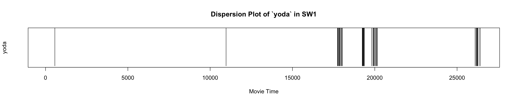
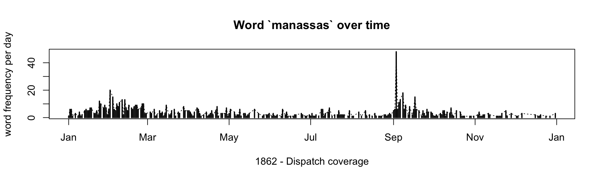

<!DOCTYPE html>
<html lang="" xml:lang="">
<head>

  <meta charset="utf-8" />
  <meta http-equiv="X-UA-Compatible" content="IE=edge" />
  <title>7 Text Analysis I: Basics | DH in AAS - TA with R (2022S)</title>
  <meta name="description" content="This is a collection of relevant materials for the class ‘57-528 ONLINE S: Digital Humanities in African and Asian Studies: Text Analysis with R’ (2022S), offered at the University of Hamburg (Afrika-Asien Institut) and taught by Maxim G. Romanov" />
  <meta name="generator" content="bookdown 0.24 and GitBook 2.6.7" />

  <meta property="og:title" content="7 Text Analysis I: Basics | DH in AAS - TA with R (2022S)" />
  <meta property="og:type" content="book" />
  <meta property="og:url" content="https://eis1600.github.io/course_TA_R_2022S/" />
  
  <meta property="og:description" content="This is a collection of relevant materials for the class ‘57-528 ONLINE S: Digital Humanities in African and Asian Studies: Text Analysis with R’ (2022S), offered at the University of Hamburg (Afrika-Asien Institut) and taught by Maxim G. Romanov" />
  <meta name="github-repo" content="EIS1600/course_TA_R_2022S" />

  <meta name="twitter:card" content="summary" />
  <meta name="twitter:title" content="7 Text Analysis I: Basics | DH in AAS - TA with R (2022S)" />
  
  <meta name="twitter:description" content="This is a collection of relevant materials for the class ‘57-528 ONLINE S: Digital Humanities in African and Asian Studies: Text Analysis with R’ (2022S), offered at the University of Hamburg (Afrika-Asien Institut) and taught by Maxim G. Romanov" />
  

<meta name="author" content="Maxim G. Romanov" />


<meta name="date" content="2022-06-10" />

  <meta name="viewport" content="width=device-width, initial-scale=1" />
  <meta name="apple-mobile-web-app-capable" content="yes" />
  <meta name="apple-mobile-web-app-status-bar-style" content="black" />
  <link rel="apple-touch-icon-precomposed" sizes="120x120" href="touch-icon.png" />
  <link rel="shortcut icon" href="favicon.ico" type="image/x-icon" />
<link rel="prev" href="data-ii-modeling-manipulating.html"/>
<link rel="next" href="text-analysis-ii-distances-keywords-summarization.html"/>
<script src="libs/header-attrs-2.11/header-attrs.js"></script>
<script src="libs/jquery-3.6.0/jquery-3.6.0.min.js"></script>
<script src="https://cdn.jsdelivr.net/npm/fuse.js@6.4.6/dist/fuse.min.js"></script>
<link href="libs/gitbook-2.6.7/css/style.css" rel="stylesheet" />
<link href="libs/gitbook-2.6.7/css/plugin-table.css" rel="stylesheet" />
<link href="libs/gitbook-2.6.7/css/plugin-bookdown.css" rel="stylesheet" />
<link href="libs/gitbook-2.6.7/css/plugin-highlight.css" rel="stylesheet" />
<link href="libs/gitbook-2.6.7/css/plugin-search.css" rel="stylesheet" />
<link href="libs/gitbook-2.6.7/css/plugin-fontsettings.css" rel="stylesheet" />
<link href="libs/gitbook-2.6.7/css/plugin-clipboard.css" rel="stylesheet" />


<link href="libs/anchor-sections-1.0.1/anchor-sections.css" rel="stylesheet" />
<script src="libs/anchor-sections-1.0.1/anchor-sections.js"></script>


<style type="text/css">
pre > code.sourceCode { white-space: pre; position: relative; }
pre > code.sourceCode > span { display: inline-block; line-height: 1.25; }
pre > code.sourceCode > span:empty { height: 1.2em; }
.sourceCode { overflow: visible; }
code.sourceCode > span { color: inherit; text-decoration: inherit; }
pre.sourceCode { margin: 0; }
@media screen {
div.sourceCode { overflow: auto; }
}
@media print {
pre > code.sourceCode { white-space: pre-wrap; }
pre > code.sourceCode > span { text-indent: -5em; padding-left: 5em; }
}
pre.numberSource code
  { counter-reset: source-line 0; }
pre.numberSource code > span
  { position: relative; left: -4em; counter-increment: source-line; }
pre.numberSource code > span > a:first-child::before
  { content: counter(source-line);
    position: relative; left: -1em; text-align: right; vertical-align: baseline;
    border: none; display: inline-block;
    -webkit-touch-callout: none; -webkit-user-select: none;
    -khtml-user-select: none; -moz-user-select: none;
    -ms-user-select: none; user-select: none;
    padding: 0 4px; width: 4em;
    color: #aaaaaa;
  }
pre.numberSource { margin-left: 3em; border-left: 1px solid #aaaaaa;  padding-left: 4px; }
div.sourceCode
  {   }
@media screen {
pre > code.sourceCode > span > a:first-child::before { text-decoration: underline; }
}
code span.al { color: #ff0000; font-weight: bold; } /* Alert */
code span.an { color: #60a0b0; font-weight: bold; font-style: italic; } /* Annotation */
code span.at { color: #7d9029; } /* Attribute */
code span.bn { color: #40a070; } /* BaseN */
code span.bu { } /* BuiltIn */
code span.cf { color: #007020; font-weight: bold; } /* ControlFlow */
code span.ch { color: #4070a0; } /* Char */
code span.cn { color: #880000; } /* Constant */
code span.co { color: #60a0b0; font-style: italic; } /* Comment */
code span.cv { color: #60a0b0; font-weight: bold; font-style: italic; } /* CommentVar */
code span.do { color: #ba2121; font-style: italic; } /* Documentation */
code span.dt { color: #902000; } /* DataType */
code span.dv { color: #40a070; } /* DecVal */
code span.er { color: #ff0000; font-weight: bold; } /* Error */
code span.ex { } /* Extension */
code span.fl { color: #40a070; } /* Float */
code span.fu { color: #06287e; } /* Function */
code span.im { } /* Import */
code span.in { color: #60a0b0; font-weight: bold; font-style: italic; } /* Information */
code span.kw { color: #007020; font-weight: bold; } /* Keyword */
code span.op { color: #666666; } /* Operator */
code span.ot { color: #007020; } /* Other */
code span.pp { color: #bc7a00; } /* Preprocessor */
code span.sc { color: #4070a0; } /* SpecialChar */
code span.ss { color: #bb6688; } /* SpecialString */
code span.st { color: #4070a0; } /* String */
code span.va { color: #19177c; } /* Variable */
code span.vs { color: #4070a0; } /* VerbatimString */
code span.wa { color: #60a0b0; font-weight: bold; font-style: italic; } /* Warning */
</style>


<link rel="stylesheet" href="style.css" type="text/css" />
</head>

<body>


  <div class="book without-animation with-summary font-size-2 font-family-1" data-basepath=".">

    <div class="book-summary">
      <nav role="navigation">

<ul class="summary">
<li><a href="./">DH Methods for Middle Eastern Studies: Text Mining with R</a></li>

<li class="divider"></li>
<li class="chapter" data-level="" data-path="index.html"><a href="index.html"><i class="fa fa-check"></i>Syllabus</a>
<ul>
<li class="chapter" data-level="" data-path="index.html"><a href="index.html#course-details"><i class="fa fa-check"></i>Course Details</a></li>
<li class="chapter" data-level="0.1" data-path="index.html"><a href="index.html#aims-contents-and-method-of-the-course"><i class="fa fa-check"></i><b>0.1</b> Aims, Contents and Method of the Course</a></li>
<li class="chapter" data-level="0.2" data-path="index.html"><a href="index.html#course-evaluation"><i class="fa fa-check"></i><b>0.2</b> Course Evaluation</a>
<ul>
<li class="chapter" data-level="0.2.1" data-path="index.html"><a href="index.html#datacamp"><i class="fa fa-check"></i><b>0.2.1</b> DataCamp</a></li>
</ul></li>
<li class="chapter" data-level="0.3" data-path="index.html"><a href="index.html#class-participation"><i class="fa fa-check"></i><b>0.3</b> Class Participation</a></li>
<li class="chapter" data-level="0.4" data-path="index.html"><a href="index.html#homework"><i class="fa fa-check"></i><b>0.4</b> Homework</a></li>
<li class="chapter" data-level="0.5" data-path="index.html"><a href="index.html#final-project"><i class="fa fa-check"></i><b>0.5</b> Final Project</a></li>
<li class="chapter" data-level="0.6" data-path="index.html"><a href="index.html#practice-worksheets-r-notebooks"><i class="fa fa-check"></i><b>0.6</b> Practice Worksheets (R Notebooks)</a></li>
<li class="chapter" data-level="0.7" data-path="index.html"><a href="index.html#additional-study-materials"><i class="fa fa-check"></i><b>0.7</b> Additional Study Materials</a></li>
<li class="chapter" data-level="0.8" data-path="index.html"><a href="index.html#software-tools-technologies"><i class="fa fa-check"></i><b>0.8</b> Software, Tools, &amp; Technologies:</a></li>
<li class="chapter" data-level="0.9" data-path="index.html"><a href="index.html#submitting-homework"><i class="fa fa-check"></i><b>0.9</b> Submitting Homework:</a>
<ul>
<li class="chapter" data-level="0.9.1" data-path="index.html"><a href="index.html#handouts-workbooks"><i class="fa fa-check"></i><b>0.9.1</b> Handouts / Workbooks</a></li>
<li class="chapter" data-level="0.9.2" data-path="index.html"><a href="index.html#datacamp-assignments"><i class="fa fa-check"></i><b>0.9.2</b> DataCamp Assignments</a></li>
</ul></li>
<li class="chapter" data-level="0.10" data-path="index.html"><a href="index.html#schedule"><i class="fa fa-check"></i><b>0.10</b> Schedule</a></li>
<li class="chapter" data-level="0.11" data-path="index.html"><a href="index.html#lesson-topics-subject-to-modifications"><i class="fa fa-check"></i><b>0.11</b> Lesson Topics (<em>subject to modifications</em>)</a></li>
</ul></li>
<li class="chapter" data-level="1" data-path="general-introduction.html"><a href="general-introduction.html"><i class="fa fa-check"></i><b>1</b> General Introduction</a>
<ul>
<li class="chapter" data-level="1.1" data-path="general-introduction.html"><a href="general-introduction.html#L01_goals"><i class="fa fa-check"></i><b>1.1</b> Goals</a></li>
<li class="chapter" data-level="1.2" data-path="general-introduction.html"><a href="general-introduction.html#L01_sw"><i class="fa fa-check"></i><b>1.2</b> Software</a></li>
<li class="chapter" data-level="1.3" data-path="general-introduction.html"><a href="general-introduction.html#L01_class"><i class="fa fa-check"></i><b>1.3</b> Class</a>
<ul>
<li class="chapter" data-level="1.3.1" data-path="general-introduction.html"><a href="general-introduction.html#installing-rmarkdown"><i class="fa fa-check"></i><b>1.3.1</b> Installing <code>rmarkdown</code></a></li>
</ul></li>
<li class="chapter" data-level="1.4" data-path="general-introduction.html"><a href="general-introduction.html#starting-with-our-first-workbook"><i class="fa fa-check"></i><b>1.4</b> Starting with our first workbook:</a></li>
<li class="chapter" data-level="1.5" data-path="general-introduction.html"><a href="general-introduction.html#L01_topics"><i class="fa fa-check"></i><b>1.5</b> Topics covered</a></li>
<li class="chapter" data-level="1.6" data-path="general-introduction.html"><a href="general-introduction.html#L01_RM"><i class="fa fa-check"></i><b>1.6</b> Reference materials</a></li>
<li class="chapter" data-level="1.7" data-path="general-introduction.html"><a href="general-introduction.html#L01_HW"><i class="fa fa-check"></i><b>1.7</b> Homework</a></li>
<li class="chapter" data-level="1.8" data-path="general-introduction.html"><a href="general-introduction.html#L01_commonissues"><i class="fa fa-check"></i><b>1.8</b> Common issues with homework</a>
<ul>
<li class="chapter" data-level="1.8.1" data-path="general-introduction.html"><a href="general-introduction.html#tracing-errors"><i class="fa fa-check"></i><b>1.8.1</b> Tracing errors</a></li>
<li class="chapter" data-level="1.8.2" data-path="general-introduction.html"><a href="general-introduction.html#comments-commenting-out"><i class="fa fa-check"></i><b>1.8.2</b> Comments / Commenting out</a></li>
<li class="chapter" data-level="1.8.3" data-path="general-introduction.html"><a href="general-introduction.html#random-errors"><i class="fa fa-check"></i><b>1.8.3</b> Random errors:</a></li>
</ul></li>
<li class="chapter" data-level="1.9" data-path="general-introduction.html"><a href="general-introduction.html#L01_SHW"><i class="fa fa-check"></i><b>1.9</b> Submitting homework</a></li>
</ul></li>
<li class="chapter" data-level="2" data-path="basics-i-main-data-structures-in-r.html"><a href="basics-i-main-data-structures-in-r.html"><i class="fa fa-check"></i><b>2</b> Basics I: Main data structures in R</a>
<ul>
<li class="chapter" data-level="2.1" data-path="basics-i-main-data-structures-in-r.html"><a href="basics-i-main-data-structures-in-r.html#goals02"><i class="fa fa-check"></i><b>2.1</b> Goals</a></li>
<li class="chapter" data-level="2.2" data-path="basics-i-main-data-structures-in-r.html"><a href="basics-i-main-data-structures-in-r.html#soft02"><i class="fa fa-check"></i><b>2.2</b> Software</a></li>
<li class="chapter" data-level="2.3" data-path="basics-i-main-data-structures-in-r.html"><a href="basics-i-main-data-structures-in-r.html#cLass02"><i class="fa fa-check"></i><b>2.3</b> Class</a>
<ul>
<li class="chapter" data-level="2.3.1" data-path="basics-i-main-data-structures-in-r.html"><a href="basics-i-main-data-structures-in-r.html#topics02"><i class="fa fa-check"></i><b>2.3.1</b> Topics: Data Structures &amp; Types</a></li>
<li class="chapter" data-level="2.3.2" data-path="basics-i-main-data-structures-in-r.html"><a href="basics-i-main-data-structures-in-r.html#additional_notes_02"><i class="fa fa-check"></i><b>2.3.2</b> Additional notes</a></li>
</ul></li>
<li class="chapter" data-level="2.4" data-path="basics-i-main-data-structures-in-r.html"><a href="basics-i-main-data-structures-in-r.html#RM02"><i class="fa fa-check"></i><b>2.4</b> Reference materials</a></li>
<li class="chapter" data-level="2.5" data-path="basics-i-main-data-structures-in-r.html"><a href="basics-i-main-data-structures-in-r.html#HW02"><i class="fa fa-check"></i><b>2.5</b> Homework</a></li>
<li class="chapter" data-level="2.6" data-path="basics-i-main-data-structures-in-r.html"><a href="basics-i-main-data-structures-in-r.html#L02_SHW"><i class="fa fa-check"></i><b>2.6</b> Submitting homework</a></li>
</ul></li>
<li class="chapter" data-level="3" data-path="basics-ii-data-manipulation-exloratory-analysis.html"><a href="basics-ii-data-manipulation-exloratory-analysis.html"><i class="fa fa-check"></i><b>3</b> Basics II: Data Manipulation &amp; Exloratory Analysis</a>
<ul>
<li class="chapter" data-level="3.1" data-path="basics-ii-data-manipulation-exloratory-analysis.html"><a href="basics-ii-data-manipulation-exloratory-analysis.html#goals03"><i class="fa fa-check"></i><b>3.1</b> Goals</a></li>
<li class="chapter" data-level="3.2" data-path="basics-ii-data-manipulation-exloratory-analysis.html"><a href="basics-ii-data-manipulation-exloratory-analysis.html#soft03"><i class="fa fa-check"></i><b>3.2</b> Software</a></li>
<li class="chapter" data-level="3.3" data-path="basics-ii-data-manipulation-exloratory-analysis.html"><a href="basics-ii-data-manipulation-exloratory-analysis.html#cLass03"><i class="fa fa-check"></i><b>3.3</b> Class</a>
<ul>
<li class="chapter" data-level="3.3.1" data-path="basics-ii-data-manipulation-exloratory-analysis.html"><a href="basics-ii-data-manipulation-exloratory-analysis.html#topics03"><i class="fa fa-check"></i><b>3.3.1</b> Topics</a></li>
</ul></li>
<li class="chapter" data-level="3.4" data-path="basics-ii-data-manipulation-exloratory-analysis.html"><a href="basics-ii-data-manipulation-exloratory-analysis.html#RM03"><i class="fa fa-check"></i><b>3.4</b> Reference materials</a></li>
<li class="chapter" data-level="3.5" data-path="basics-ii-data-manipulation-exloratory-analysis.html"><a href="basics-ii-data-manipulation-exloratory-analysis.html#HW03"><i class="fa fa-check"></i><b>3.5</b> Homework</a></li>
<li class="chapter" data-level="3.6" data-path="basics-ii-data-manipulation-exloratory-analysis.html"><a href="basics-ii-data-manipulation-exloratory-analysis.html#SHW03"><i class="fa fa-check"></i><b>3.6</b> Submitting homework</a></li>
</ul></li>
<li class="chapter" data-level="4" data-path="basics-iii-data-visualization-functions.html"><a href="basics-iii-data-visualization-functions.html"><i class="fa fa-check"></i><b>4</b> Basics III: Data Visualization; Functions</a>
<ul>
<li class="chapter" data-level="4.1" data-path="basics-iii-data-visualization-functions.html"><a href="basics-iii-data-visualization-functions.html#goals04"><i class="fa fa-check"></i><b>4.1</b> Goals</a></li>
<li class="chapter" data-level="4.2" data-path="basics-iii-data-visualization-functions.html"><a href="basics-iii-data-visualization-functions.html#soft04"><i class="fa fa-check"></i><b>4.2</b> Software</a></li>
<li class="chapter" data-level="4.3" data-path="basics-iii-data-visualization-functions.html"><a href="basics-iii-data-visualization-functions.html#cLass04"><i class="fa fa-check"></i><b>4.3</b> Class</a></li>
<li class="chapter" data-level="4.4" data-path="basics-iii-data-visualization-functions.html"><a href="basics-iii-data-visualization-functions.html#topics04"><i class="fa fa-check"></i><b>4.4</b> Topics</a></li>
<li class="chapter" data-level="4.5" data-path="basics-iii-data-visualization-functions.html"><a href="basics-iii-data-visualization-functions.html#RM04"><i class="fa fa-check"></i><b>4.5</b> Reference materials</a></li>
<li class="chapter" data-level="4.6" data-path="basics-iii-data-visualization-functions.html"><a href="basics-iii-data-visualization-functions.html#HW04"><i class="fa fa-check"></i><b>4.6</b> Homework</a></li>
<li class="chapter" data-level="4.7" data-path="basics-iii-data-visualization-functions.html"><a href="basics-iii-data-visualization-functions.html#SHW04"><i class="fa fa-check"></i><b>4.7</b> Submitting homework</a></li>
</ul></li>
<li class="chapter" data-level="5" data-path="data-i-collecting-organizing-creating.html"><a href="data-i-collecting-organizing-creating.html"><i class="fa fa-check"></i><b>5</b> Data I: Collecting, Organizing, Creating</a>
<ul>
<li class="chapter" data-level="5.1" data-path="data-i-collecting-organizing-creating.html"><a href="data-i-collecting-organizing-creating.html#goals05"><i class="fa fa-check"></i><b>5.1</b> Goals</a></li>
<li class="chapter" data-level="5.2" data-path="data-i-collecting-organizing-creating.html"><a href="data-i-collecting-organizing-creating.html#soft05"><i class="fa fa-check"></i><b>5.2</b> Software</a></li>
<li class="chapter" data-level="5.3" data-path="data-i-collecting-organizing-creating.html"><a href="data-i-collecting-organizing-creating.html#CA05"><i class="fa fa-check"></i><b>5.3</b> In Class I: <em>Theoretical and Conceptual</em></a>
<ul>
<li class="chapter" data-level="5.3.1" data-path="data-i-collecting-organizing-creating.html"><a href="data-i-collecting-organizing-creating.html#CaA05"><i class="fa fa-check"></i><b>5.3.1</b> Ways of obtaining data</a></li>
<li class="chapter" data-level="5.3.2" data-path="data-i-collecting-organizing-creating.html"><a href="data-i-collecting-organizing-creating.html#CbA05"><i class="fa fa-check"></i><b>5.3.2</b> Main format</a></li>
<li class="chapter" data-level="5.3.3" data-path="data-i-collecting-organizing-creating.html"><a href="data-i-collecting-organizing-creating.html#CdA05"><i class="fa fa-check"></i><b>5.3.3</b> Basic principles of organizing data: <em>Tidy Data</em></a></li>
</ul></li>
<li class="chapter" data-level="5.4" data-path="data-i-collecting-organizing-creating.html"><a href="data-i-collecting-organizing-creating.html#CB05"><i class="fa fa-check"></i><b>5.4</b> In Class II: <em>Practical</em></a>
<ul>
<li class="chapter" data-level="5.4.1" data-path="data-i-collecting-organizing-creating.html"><a href="data-i-collecting-organizing-creating.html#CaB05"><i class="fa fa-check"></i><b>5.4.1</b> Morris Dataset: <em>the East Vs. the West</em></a></li>
</ul></li>
<li class="chapter" data-level="5.5" data-path="data-i-collecting-organizing-creating.html"><a href="data-i-collecting-organizing-creating.html#OCR05"><i class="fa fa-check"></i><b>5.5</b> OCR in R</a></li>
<li class="chapter" data-level="5.6" data-path="data-i-collecting-organizing-creating.html"><a href="data-i-collecting-organizing-creating.html#rm05"><i class="fa fa-check"></i><b>5.6</b> Reference Materials:</a>
<ul>
<li class="chapter" data-level="5.6.1" data-path="data-i-collecting-organizing-creating.html"><a href="data-i-collecting-organizing-creating.html#rmA05"><i class="fa fa-check"></i><b>5.6.1</b> Additional</a></li>
<li class="chapter" data-level="5.6.2" data-path="data-i-collecting-organizing-creating.html"><a href="data-i-collecting-organizing-creating.html#rmB05"><i class="fa fa-check"></i><b>5.6.2</b> Additional Readings</a></li>
</ul></li>
<li class="chapter" data-level="5.7" data-path="data-i-collecting-organizing-creating.html"><a href="data-i-collecting-organizing-creating.html#HW05"><i class="fa fa-check"></i><b>5.7</b> Homework</a></li>
<li class="chapter" data-level="5.8" data-path="data-i-collecting-organizing-creating.html"><a href="data-i-collecting-organizing-creating.html#SHW05"><i class="fa fa-check"></i><b>5.8</b> Submitting homework</a></li>
</ul></li>
<li class="chapter" data-level="6" data-path="data-ii-modeling-manipulating.html"><a href="data-ii-modeling-manipulating.html"><i class="fa fa-check"></i><b>6</b> Data II: Modeling &amp; Manipulating</a>
<ul>
<li class="chapter" data-level="6.1" data-path="data-ii-modeling-manipulating.html"><a href="data-ii-modeling-manipulating.html#goals06"><i class="fa fa-check"></i><b>6.1</b> Goals:</a></li>
<li class="chapter" data-level="6.2" data-path="data-ii-modeling-manipulating.html"><a href="data-ii-modeling-manipulating.html#soft06"><i class="fa fa-check"></i><b>6.2</b> Software:</a></li>
<li class="chapter" data-level="6.3" data-path="data-ii-modeling-manipulating.html"><a href="data-ii-modeling-manipulating.html#InClassI06"><i class="fa fa-check"></i><b>6.3</b> In Class I: <em>Theoretical and Conceptual</em></a>
<ul>
<li class="chapter" data-level="6.3.1" data-path="data-ii-modeling-manipulating.html"><a href="data-ii-modeling-manipulating.html#DM06"><i class="fa fa-check"></i><b>6.3.1</b> Ways of modeling data: Categorization</a></li>
<li class="chapter" data-level="6.3.2" data-path="data-ii-modeling-manipulating.html"><a href="data-ii-modeling-manipulating.html#Norm06"><i class="fa fa-check"></i><b>6.3.2</b> Normalization</a></li>
<li class="chapter" data-level="6.3.3" data-path="data-ii-modeling-manipulating.html"><a href="data-ii-modeling-manipulating.html#Proxies06"><i class="fa fa-check"></i><b>6.3.3</b> Note: <em>Proxies</em>, <em>Features</em>, <em>Abstractions</em></a></li>
</ul></li>
<li class="chapter" data-level="6.4" data-path="data-ii-modeling-manipulating.html"><a href="data-ii-modeling-manipulating.html#InClassII06"><i class="fa fa-check"></i><b>6.4</b> In Class II: <em>Practical</em></a>
<ul>
<li class="chapter" data-level="6.4.1" data-path="data-ii-modeling-manipulating.html"><a href="data-ii-modeling-manipulating.html#Si06"><i class="fa fa-check"></i><b>6.4.1</b> SECTION I.</a></li>
<li class="chapter" data-level="6.4.2" data-path="data-ii-modeling-manipulating.html"><a href="data-ii-modeling-manipulating.html#Sii06"><i class="fa fa-check"></i><b>6.4.2</b> SECTION II</a></li>
</ul></li>
<li class="chapter" data-level="6.5" data-path="data-ii-modeling-manipulating.html"><a href="data-ii-modeling-manipulating.html#RM06"><i class="fa fa-check"></i><b>6.5</b> Reference Materials</a>
<ul>
<li class="chapter" data-level="6.5.1" data-path="data-ii-modeling-manipulating.html"><a href="data-ii-modeling-manipulating.html#AR06"><i class="fa fa-check"></i><b>6.5.1</b> Additional Readings</a></li>
</ul></li>
<li class="chapter" data-level="6.6" data-path="data-ii-modeling-manipulating.html"><a href="data-ii-modeling-manipulating.html#HW06"><i class="fa fa-check"></i><b>6.6</b> Homework</a></li>
<li class="chapter" data-level="6.7" data-path="data-ii-modeling-manipulating.html"><a href="data-ii-modeling-manipulating.html#SHW06"><i class="fa fa-check"></i><b>6.7</b> Submitting homework</a></li>
</ul></li>
<li class="chapter" data-level="7" data-path="text-analysis-i-basics.html"><a href="text-analysis-i-basics.html"><i class="fa fa-check"></i><b>7</b> Text Analysis I: Basics</a>
<ul>
<li class="chapter" data-level="7.1" data-path="text-analysis-i-basics.html"><a href="text-analysis-i-basics.html#goals07"><i class="fa fa-check"></i><b>7.1</b> Goals</a></li>
<li class="chapter" data-level="7.2" data-path="text-analysis-i-basics.html"><a href="text-analysis-i-basics.html#Prelim07"><i class="fa fa-check"></i><b>7.2</b> Preliminaries</a>
<ul>
<li class="chapter" data-level="7.2.1" data-path="text-analysis-i-basics.html"><a href="text-analysis-i-basics.html#Data07"><i class="fa fa-check"></i><b>7.2.1</b> Data</a></li>
<li class="chapter" data-level="7.2.2" data-path="text-analysis-i-basics.html"><a href="text-analysis-i-basics.html#Lib07"><i class="fa fa-check"></i><b>7.2.2</b> Libraries</a></li>
<li class="chapter" data-level="7.2.3" data-path="text-analysis-i-basics.html"><a href="text-analysis-i-basics.html#functions07"><i class="fa fa-check"></i><b>7.2.3</b> Functions in <code>R</code> (a refresher)</a></li>
</ul></li>
<li class="chapter" data-level="7.3" data-path="text-analysis-i-basics.html"><a href="text-analysis-i-basics.html#texts-and-text-analysis"><i class="fa fa-check"></i><b>7.3</b> Texts and Text Analysis</a></li>
<li class="chapter" data-level="7.4" data-path="text-analysis-i-basics.html"><a href="text-analysis-i-basics.html#word-frequencies-and-word-clouds"><i class="fa fa-check"></i><b>7.4</b> Word Frequencies and Word Clouds</a>
<ul>
<li class="chapter" data-level="7.4.1" data-path="text-analysis-i-basics.html"><a href="text-analysis-i-basics.html#word-frequencies"><i class="fa fa-check"></i><b>7.4.1</b> Word Frequencies</a></li>
<li class="chapter" data-level="7.4.2" data-path="text-analysis-i-basics.html"><a href="text-analysis-i-basics.html#wordclouds"><i class="fa fa-check"></i><b>7.4.2</b> Wordclouds</a></li>
</ul></li>
<li class="chapter" data-level="7.5" data-path="text-analysis-i-basics.html"><a href="text-analysis-i-basics.html#word-distribution-plots"><i class="fa fa-check"></i><b>7.5</b> Word Distribution Plots</a>
<ul>
<li class="chapter" data-level="7.5.1" data-path="text-analysis-i-basics.html"><a href="text-analysis-i-basics.html#simple-a-star-wars-example"><i class="fa fa-check"></i><b>7.5.1</b> Simple — a Star Wars Example</a></li>
</ul></li>
<li class="chapter" data-level="7.6" data-path="text-analysis-i-basics.html"><a href="text-analysis-i-basics.html#word-distribution-plots-with-frequencies-over-time"><i class="fa fa-check"></i><b>7.6</b> Word Distribution Plots: With Frequencies Over Time</a></li>
<li class="chapter" data-level="7.7" data-path="text-analysis-i-basics.html"><a href="text-analysis-i-basics.html#kwic-keywords-in-context"><i class="fa fa-check"></i><b>7.7</b> KWIC: Keywords-in-Context</a></li>
<li class="chapter" data-level="7.8" data-path="text-analysis-i-basics.html"><a href="text-analysis-i-basics.html#HW07"><i class="fa fa-check"></i><b>7.8</b> Homework</a></li>
<li class="chapter" data-level="7.9" data-path="text-analysis-i-basics.html"><a href="text-analysis-i-basics.html#SHW07"><i class="fa fa-check"></i><b>7.9</b> Submitting homework</a></li>
</ul></li>
<li class="chapter" data-level="8" data-path="text-analysis-ii-distances-keywords-summarization.html"><a href="text-analysis-ii-distances-keywords-summarization.html"><i class="fa fa-check"></i><b>8</b> Text Analysis II: Distances, Keywords, Summarization</a>
<ul>
<li class="chapter" data-level="8.1" data-path="text-analysis-ii-distances-keywords-summarization.html"><a href="text-analysis-ii-distances-keywords-summarization.html#goals08"><i class="fa fa-check"></i><b>8.1</b> Goals</a></li>
<li class="chapter" data-level="8.2" data-path="text-analysis-ii-distances-keywords-summarization.html"><a href="text-analysis-ii-distances-keywords-summarization.html#Prelim08"><i class="fa fa-check"></i><b>8.2</b> Preliminaries</a>
<ul>
<li class="chapter" data-level="8.2.1" data-path="text-analysis-ii-distances-keywords-summarization.html"><a href="text-analysis-ii-distances-keywords-summarization.html#Data08"><i class="fa fa-check"></i><b>8.2.1</b> Data</a></li>
</ul></li>
<li class="chapter" data-level="8.3" data-path="text-analysis-ii-distances-keywords-summarization.html"><a href="text-analysis-ii-distances-keywords-summarization.html#docsim08"><i class="fa fa-check"></i><b>8.3</b> Document similarity/distance measures: <code>text2vec</code> library</a>
<ul>
<li class="chapter" data-level="8.3.1" data-path="text-analysis-ii-distances-keywords-summarization.html"><a href="text-analysis-ii-distances-keywords-summarization.html#distance-measures-jaccard-index-cosine-similarity-euclidean-distance"><i class="fa fa-check"></i><b>8.3.1</b> Distance Measures: Jaccard index, Cosine similarity, Euclidean distance</a></li>
<li class="chapter" data-level="8.3.2" data-path="text-analysis-ii-distances-keywords-summarization.html"><a href="text-analysis-ii-distances-keywords-summarization.html#now-lets-run-this-on-dispatch"><i class="fa fa-check"></i><b>8.3.2</b> Now, let’s run this on “Dispatch”</a></li>
</ul></li>
<li class="chapter" data-level="8.4" data-path="text-analysis-ii-distances-keywords-summarization.html"><a href="text-analysis-ii-distances-keywords-summarization.html#tf-idf"><i class="fa fa-check"></i><b>8.4</b> TF-IDF</a>
<ul>
<li class="chapter" data-level="8.4.1" data-path="text-analysis-ii-distances-keywords-summarization.html"><a href="text-analysis-ii-distances-keywords-summarization.html#inaugural-speeches-of-the-us-presidents"><i class="fa fa-check"></i><b>8.4.1</b> Inaugural speeches of the US presidents</a></li>
</ul></li>
<li class="chapter" data-level="8.5" data-path="text-analysis-ii-distances-keywords-summarization.html"><a href="text-analysis-ii-distances-keywords-summarization.html#text-summarization"><i class="fa fa-check"></i><b>8.5</b> Text summarization</a></li>
<li class="chapter" data-level="8.6" data-path="text-analysis-ii-distances-keywords-summarization.html"><a href="text-analysis-ii-distances-keywords-summarization.html#HW08"><i class="fa fa-check"></i><b>8.6</b> Homework</a></li>
<li class="chapter" data-level="8.7" data-path="text-analysis-ii-distances-keywords-summarization.html"><a href="text-analysis-ii-distances-keywords-summarization.html#SHW08"><i class="fa fa-check"></i><b>8.7</b> Submitting homework</a></li>
</ul></li>
<li class="chapter" data-level="" data-path="references.html"><a href="references.html"><i class="fa fa-check"></i>References</a></li>
<li class="divider"></li>
<li><a href="https://github.com/rstudio/bookdown" target="blank">Published with bookdown</a></li>

</ul>

      </nav>
    </div>

    <div class="book-body">
      <div class="body-inner">
        <div class="book-header" role="navigation">
          <h1>
            <i class="fa fa-circle-o-notch fa-spin"></i><a href="./">DH in AAS - TA with R (2022S)</a>
          </h1>
        </div>

        <div class="page-wrapper" tabindex="-1" role="main">
          <div class="page-inner">

            <section class="normal" id="section-">
<div id="text-analysis-i-basics" class="section level1" number="7">
<h1><span class="header-section-number">7</span> Text Analysis I: Basics</h1>
<div id="goals07" class="section level2" number="7.1">
<h2><span class="header-section-number">7.1</span> Goals</h2>
<ul>
<li>basic text analysis concepts;</li>
<li>word frequencies and word clouds;</li>
<li>word distribution plots;</li>
<li>kwic: keywords-in-context</li>
</ul>
</div>
<div id="Prelim07" class="section level2" number="7.2">
<h2><span class="header-section-number">7.2</span> Preliminaries</h2>
<div id="Data07" class="section level3" number="7.2.1">
<h3><span class="header-section-number">7.2.1</span> Data</h3>
<p>We will use the following text files in this worksheet. Please download them and keep them close to your worksheet. Since some of the files are quite large, you want to download them before loading them into R:</p>
<ul>
<li><a href="./files/data/dispatch_1862.tsv">The Richmond Dispatch (1862)</a></li>
<li><a href="./files/data/sw1.md">Star Wars I: The Phantom Menace (script)</a></li>
</ul>
<p>In order to make loading these files a little bit easier, you can paste the path to where you placed these files into an isolated variable and then reuse it as follows (in other words, make sure that your <code>pathToFiles</code> is the path on your local machine):</p>
<div class="sourceCode" id="cb7"><pre class="sourceCode r"><code class="sourceCode r"><span id="cb7-1"><a href="text-analysis-i-basics.html#cb7-1" aria-hidden="true" tabindex="-1"></a>pathToFiles <span class="ot">=</span> <span class="st">&quot;./files/data/&quot;</span></span>
<span id="cb7-2"><a href="text-analysis-i-basics.html#cb7-2" aria-hidden="true" tabindex="-1"></a></span>
<span id="cb7-3"><a href="text-analysis-i-basics.html#cb7-3" aria-hidden="true" tabindex="-1"></a>d1862 <span class="ot">&lt;-</span> <span class="fu">read.delim</span>(<span class="fu">paste0</span>(pathToFiles, <span class="st">&quot;dispatch_1862.tsv&quot;</span>), <span class="at">encoding=</span><span class="st">&quot;UTF-8&quot;</span>, <span class="at">header=</span><span class="cn">TRUE</span>, <span class="at">quote=</span><span class="st">&quot;&quot;</span>)</span>
<span id="cb7-4"><a href="text-analysis-i-basics.html#cb7-4" aria-hidden="true" tabindex="-1"></a>sw1 <span class="ot">&lt;-</span> <span class="fu">scan</span>(<span class="fu">paste0</span>(pathToFiles, <span class="st">&quot;sw1.md&quot;</span>), <span class="at">what=</span><span class="st">&quot;character&quot;</span>, <span class="at">sep=</span><span class="st">&quot;</span><span class="sc">\n</span><span class="st">&quot;</span>)</span></code></pre></div>
<p>The first file is articles from “The Daily Dispatch” for the year 1862. The newspaper was published in Richmond, VA — the capital of the Confederate States (the South) during the American Civil War (1861-1865). The second file is a script of the first episode of Star Wars :).</p>
</div>
<div id="Lib07" class="section level3" number="7.2.2">
<h3><span class="header-section-number">7.2.2</span> Libraries</h3>
<p>The following are the libraries that we will need for this section. Install those that you do not have yet.</p>
<div class="sourceCode" id="cb8"><pre class="sourceCode r"><code class="sourceCode r"><span id="cb8-1"><a href="text-analysis-i-basics.html#cb8-1" aria-hidden="true" tabindex="-1"></a><span class="co">#install.packages(&quot;tidyverse&quot;, &quot;readr&quot;, &quot;stringr&quot;)</span></span>
<span id="cb8-2"><a href="text-analysis-i-basics.html#cb8-2" aria-hidden="true" tabindex="-1"></a><span class="co">#install.packages(&quot;tidytext&quot;, &quot;wordcloud&quot;, &quot;RColorBrewer&quot;&quot;, &quot;quanteda&quot;, &quot;readtext&quot;)</span></span>
<span id="cb8-3"><a href="text-analysis-i-basics.html#cb8-3" aria-hidden="true" tabindex="-1"></a></span>
<span id="cb8-4"><a href="text-analysis-i-basics.html#cb8-4" aria-hidden="true" tabindex="-1"></a><span class="co"># General ones </span></span>
<span id="cb8-5"><a href="text-analysis-i-basics.html#cb8-5" aria-hidden="true" tabindex="-1"></a><span class="fu">library</span>(tidyverse)</span>
<span id="cb8-6"><a href="text-analysis-i-basics.html#cb8-6" aria-hidden="true" tabindex="-1"></a><span class="fu">library</span>(readr)</span>
<span id="cb8-7"><a href="text-analysis-i-basics.html#cb8-7" aria-hidden="true" tabindex="-1"></a><span class="fu">library</span>(<span class="st">&quot;RColorBrewer&quot;</span>)</span>
<span id="cb8-8"><a href="text-analysis-i-basics.html#cb8-8" aria-hidden="true" tabindex="-1"></a></span>
<span id="cb8-9"><a href="text-analysis-i-basics.html#cb8-9" aria-hidden="true" tabindex="-1"></a><span class="co"># Text Analysis Specific</span></span>
<span id="cb8-10"><a href="text-analysis-i-basics.html#cb8-10" aria-hidden="true" tabindex="-1"></a><span class="fu">library</span>(stringr)</span>
<span id="cb8-11"><a href="text-analysis-i-basics.html#cb8-11" aria-hidden="true" tabindex="-1"></a><span class="fu">library</span>(tidytext)</span>
<span id="cb8-12"><a href="text-analysis-i-basics.html#cb8-12" aria-hidden="true" tabindex="-1"></a><span class="fu">library</span>(wordcloud)</span>
<span id="cb8-13"><a href="text-analysis-i-basics.html#cb8-13" aria-hidden="true" tabindex="-1"></a><span class="fu">library</span>(quanteda)</span>
<span id="cb8-14"><a href="text-analysis-i-basics.html#cb8-14" aria-hidden="true" tabindex="-1"></a><span class="fu">library</span>(readtext)</span></code></pre></div>
</div>
<div id="functions07" class="section level3" number="7.2.3">
<h3><span class="header-section-number">7.2.3</span> Functions in <code>R</code> (a refresher)</h3>
<p>Functions are groups of related statements that perform a specific task, which help breaking a program into smaller and modular chunks. As programs grow larger and larger, functions make them more organized and manageable. Functions help avoiding repetition and makes code reusable.</p>
<p>Most programming languages, <code>R</code> including, come with a lot of pre-defined—or built-in—functions. Essentially, all statements that take arguments in parentheses are functions. For instance, in the code chunk above, <code>read.delim()</code> is a function that takes as its arguments: 1) filename (or, path to a file); 2) encoding; 3) specifies that the file has a header; and 4) not using <code>"</code> as a special character. We can also write our own functions, which take care of sets of operations thet we tend to repeat again and again.</p>
<p>Later, take a look at this <a href="https://campus.datacamp.com/courses/writing-functions-in-r/a-quick-refresher?ex=1">video by one of the key <code>R</code> developers</a>, and check this <a href="https://rpubs.com/williamsurles/292234">tutorial</a>.</p>
<div id="Hypothenuse07" class="section level4" number="7.2.3.1">
<h4><span class="header-section-number">7.2.3.1</span> Simple Function Example: Hypothenuse</h4>
<p>(From <a href="https://en.wikipedia.org/wiki/Hypotenuse">Wikipedia</a>) In geometry, a <em>hypotenuse</em> is the longest side of a right-angled triangle, the side opposite the right angle. The length of the hypotenuse of a right triangle can be found using the Pythagorean theorem, which states that the square of the length of the hypotenuse equals the sum of the squares of the lengths of the other two sides (<em>catheti</em>). For example, if one of the other sides has a length of 3 (when squared, 9) and the other has a length of 4 (when squared, 16), then their squares add up to 25. The length of the hypotenuse is the square root of 25, that is, 5.</p>
<p>Let’s write a function that takes lengths of catheti as arguments and returns the length of hypothenuse:</p>
<div class="sourceCode" id="cb9"><pre class="sourceCode r"><code class="sourceCode r"><span id="cb9-1"><a href="text-analysis-i-basics.html#cb9-1" aria-hidden="true" tabindex="-1"></a>hypothenuse <span class="ot">&lt;-</span> <span class="cf">function</span>(cathetus1, cathetus2) {</span>
<span id="cb9-2"><a href="text-analysis-i-basics.html#cb9-2" aria-hidden="true" tabindex="-1"></a>  hypothenuse<span class="ot">&lt;-</span> <span class="fu">sqrt</span>(cathetus1<span class="sc">*</span>cathetus1<span class="sc">+</span>cathetus2<span class="sc">*</span>cathetus2)</span>
<span id="cb9-3"><a href="text-analysis-i-basics.html#cb9-3" aria-hidden="true" tabindex="-1"></a>  <span class="fu">print</span>(<span class="fu">paste</span>(<span class="st">&quot;In the triangle with catheti of length&quot;</span>,</span>
<span id="cb9-4"><a href="text-analysis-i-basics.html#cb9-4" aria-hidden="true" tabindex="-1"></a>              cathetus1, <span class="st">&quot;and&quot;</span>, cathetus2,</span>
<span id="cb9-5"><a href="text-analysis-i-basics.html#cb9-5" aria-hidden="true" tabindex="-1"></a>              <span class="st">&quot;, the length of hypothenuse is&quot;</span>,</span>
<span id="cb9-6"><a href="text-analysis-i-basics.html#cb9-6" aria-hidden="true" tabindex="-1"></a>              hypothenuse))</span>
<span id="cb9-7"><a href="text-analysis-i-basics.html#cb9-7" aria-hidden="true" tabindex="-1"></a>  <span class="fu">return</span>(hypothenuse)</span>
<span id="cb9-8"><a href="text-analysis-i-basics.html#cb9-8" aria-hidden="true" tabindex="-1"></a>}</span></code></pre></div>
<p>Let’s try a simple example:</p>
<div class="sourceCode" id="cb10"><pre class="sourceCode r"><code class="sourceCode r"><span id="cb10-1"><a href="text-analysis-i-basics.html#cb10-1" aria-hidden="true" tabindex="-1"></a><span class="fu">hypothenuse</span>(<span class="dv">3</span>,<span class="dv">4</span>)</span></code></pre></div>
<pre><code>## [1] &quot;In the triangle with catheti of length 3 and 4 , the length of hypothenuse is 5&quot;</code></pre>
<pre><code>## [1] 5</code></pre>
<p>Let’s try a crazy example:</p>
<div class="sourceCode" id="cb13"><pre class="sourceCode r"><code class="sourceCode r"><span id="cb13-1"><a href="text-analysis-i-basics.html#cb13-1" aria-hidden="true" tabindex="-1"></a><span class="fu">hypothenuse</span>(<span class="dv">390</span>,<span class="dv">456</span>)</span></code></pre></div>
<pre><code>## [1] &quot;In the triangle with catheti of length 390 and 456 , the length of hypothenuse is 600.029999250037&quot;</code></pre>
<pre><code>## [1] 600.03</code></pre>
<p>###$ More complex one: Cleaning Text</p>
<p>Let’s say we want to clean up a text so that it is easier to analyze it: 1) convert everithing to lower case; 2) remove all non-alphanumeric characters; and 3) make sure that there are no multiple spaces:</p>
<div class="sourceCode" id="cb16"><pre class="sourceCode r"><code class="sourceCode r"><span id="cb16-1"><a href="text-analysis-i-basics.html#cb16-1" aria-hidden="true" tabindex="-1"></a>clean_up_text <span class="ot">=</span> <span class="cf">function</span>(x) {</span>
<span id="cb16-2"><a href="text-analysis-i-basics.html#cb16-2" aria-hidden="true" tabindex="-1"></a>  x <span class="sc">%&gt;%</span> </span>
<span id="cb16-3"><a href="text-analysis-i-basics.html#cb16-3" aria-hidden="true" tabindex="-1"></a>    str_to_lower <span class="sc">%&gt;%</span> <span class="co"># make text lower case</span></span>
<span id="cb16-4"><a href="text-analysis-i-basics.html#cb16-4" aria-hidden="true" tabindex="-1"></a>    <span class="fu">str_replace_all</span>(<span class="st">&quot;[^[:alnum:]]&quot;</span>, <span class="st">&quot; &quot;</span>) <span class="sc">%&gt;%</span> <span class="co"># remove non-alphanumeric symbols</span></span>
<span id="cb16-5"><a href="text-analysis-i-basics.html#cb16-5" aria-hidden="true" tabindex="-1"></a>    <span class="fu">str_replace_all</span>(<span class="st">&quot;</span><span class="sc">\\</span><span class="st">s+&quot;</span>, <span class="st">&quot; &quot;</span>) <span class="co"># collapse multiple spaces</span></span>
<span id="cb16-6"><a href="text-analysis-i-basics.html#cb16-6" aria-hidden="true" tabindex="-1"></a>}</span></code></pre></div>
<p>Let’s test it now:</p>
<div class="sourceCode" id="cb17"><pre class="sourceCode r"><code class="sourceCode r"><span id="cb17-1"><a href="text-analysis-i-basics.html#cb17-1" aria-hidden="true" tabindex="-1"></a>text <span class="ot">=</span> <span class="st">&quot;This is a sentence with punctuation, which mentions Hamburg, a city in Germany.&quot;</span></span>
<span id="cb17-2"><a href="text-analysis-i-basics.html#cb17-2" aria-hidden="true" tabindex="-1"></a><span class="fu">clean_up_text</span>(text)</span></code></pre></div>
<pre><code>## [1] &quot;this is a sentence with punctuation which mentions hamburg a city in germany &quot;</code></pre>
</div>
</div>
</div>
<div id="texts-and-text-analysis" class="section level2" number="7.3">
<h2><span class="header-section-number">7.3</span> Texts and Text Analysis</h2>
<p>We can think of text analysis as means of extracting meaningful information from structured and unstructured texts. As historians, we often do that by reading texts and collecting relevant information by taking notes, writing index cards, summarizing texts, juxtaposing one texts against another, comparing texts, looking into how specific words and terms are used, etc. Doing text analysis computationally we do lots of similar things: we extract information of specific kind, we compare texts, we look for similarities, we look differences, etc.</p>
<p>While there are similarities between traditional text analysis, there are of course, also significant differences. One of them is procedural: in computational reading we must explicitly perform every step of our analyses. For example, when we read a sentence, we, sort of, automatically identify the meaningful words — subject, verb, object, etc.; we identify keywords; we parse every word, identifying what part of speech it is, what is its lemma (i.e. its dictionary form, etc.). By doing these steps we re-construct the meaning of the text that we read — but we do most of these steps almost unconsciously, especially if a text is written in our native tongues. In computational analysis, these steps must be performed explicitly (<em>in the order of growing complexity</em>):</p>
<ol style="list-style-type: decimal">
<li><strong>Tokenization</strong>: what we see as a text made of words, the computer sees as a continuous string of characters (white spaces, punctuation and the like are characters). We need to break such strings into discreet objects that computer can understand construe as words.</li>
<li><strong>Lemmatization</strong>: reduces the variety of forms of the same words to their dictionary forms. Another, somewhat similar procedure is called <code>stemming</code>, which usually means the removal of most common suffixes and endings to get to the <em>stem</em> (or, <em>root</em>) of the word.</li>
<li><strong>POS (part-of-speech tagging)</strong>: this is where we run some NLP tool that identifies the part of speech of each word in our text.</li>
<li><strong>Syntactic analysis</strong>: is the most complicated procedure, which is also usually performed with some NLP tool, which analyzes syntactic relationships within each sentence, identifying its subject(s), verb(s), object(s), etc.</li>
</ol>
<p><strong>NOTE:</strong></p>
<ul>
<li>NLP: <em>natural language processing</em>;</li>
<li>Token: you can think of <em>token</em> as a continuous string of letter characters, as a word as it appears in the text in its inflected forms with possible other attached elements (in Arabic we often have prepositions, articles, pronominal suffixes, which are not part of the word, but attached to it);</li>
<li>Lemma: the dictionary form of the word;</li>
<li>Stem: a “root” of the word;</li>
</ul>
<p>Some examples:</p>
<div class="sourceCode" id="cb19"><pre class="sourceCode r"><code class="sourceCode r"><span id="cb19-1"><a href="text-analysis-i-basics.html#cb19-1" aria-hidden="true" tabindex="-1"></a><span class="co">#install.packages(&quot;textstem&quot;)</span></span>
<span id="cb19-2"><a href="text-analysis-i-basics.html#cb19-2" aria-hidden="true" tabindex="-1"></a><span class="fu">library</span>(textstem)</span>
<span id="cb19-3"><a href="text-analysis-i-basics.html#cb19-3" aria-hidden="true" tabindex="-1"></a></span>
<span id="cb19-4"><a href="text-analysis-i-basics.html#cb19-4" aria-hidden="true" tabindex="-1"></a>sentence <span class="ot">=</span> <span class="fu">c</span>(</span>
<span id="cb19-5"><a href="text-analysis-i-basics.html#cb19-5" aria-hidden="true" tabindex="-1"></a>  <span class="st">&quot;He tried to open one of the bigger boxes.&quot;</span>,</span>
<span id="cb19-6"><a href="text-analysis-i-basics.html#cb19-6" aria-hidden="true" tabindex="-1"></a>  <span class="st">&quot;The smaller boxes did not want to be opened.&quot;</span>,</span>
<span id="cb19-7"><a href="text-analysis-i-basics.html#cb19-7" aria-hidden="true" tabindex="-1"></a>  <span class="st">&quot;Different forms: open, opens, opened, opening, opened, opener, openers.&quot;</span></span>
<span id="cb19-8"><a href="text-analysis-i-basics.html#cb19-8" aria-hidden="true" tabindex="-1"></a>  )</span></code></pre></div>
<p>The library <code>textstem</code> does lemmatization and stemming, but only for English. Tokenization can be performed with <code>str_split()</code> function — and you can define <em>how</em> you want your string to be split.</p>
<ul>
<li>Tokenization</li>
</ul>
<div class="sourceCode" id="cb20"><pre class="sourceCode r"><code class="sourceCode r"><span id="cb20-1"><a href="text-analysis-i-basics.html#cb20-1" aria-hidden="true" tabindex="-1"></a><span class="fu">str_split</span>(sentence, <span class="st">&quot;</span><span class="sc">\\</span><span class="st">W+&quot;</span>)</span></code></pre></div>
<pre><code>## [[1]]
##  [1] &quot;He&quot;     &quot;tried&quot;  &quot;to&quot;     &quot;open&quot;   &quot;one&quot;    &quot;of&quot;     &quot;the&quot;    &quot;bigger&quot;
##  [9] &quot;boxes&quot;  &quot;&quot;      
## 
## [[2]]
##  [1] &quot;The&quot;     &quot;smaller&quot; &quot;boxes&quot;   &quot;did&quot;     &quot;not&quot;     &quot;want&quot;    &quot;to&quot;     
##  [8] &quot;be&quot;      &quot;opened&quot;  &quot;&quot;       
## 
## [[3]]
##  [1] &quot;Different&quot; &quot;forms&quot;     &quot;open&quot;      &quot;opens&quot;     &quot;opened&quot;    &quot;opening&quot;  
##  [7] &quot;opened&quot;    &quot;opener&quot;    &quot;openers&quot;   &quot;&quot;</code></pre>
<ul>
<li>Lemmatization</li>
</ul>
<div class="sourceCode" id="cb22"><pre class="sourceCode r"><code class="sourceCode r"><span id="cb22-1"><a href="text-analysis-i-basics.html#cb22-1" aria-hidden="true" tabindex="-1"></a><span class="fu">lemmatize_strings</span>(sentence)</span></code></pre></div>
<pre><code>## [1] &quot;He try to open one of the big box.&quot;                           
## [2] &quot;The small box do not want to be open.&quot;                        
## [3] &quot;Different form: open, open, open, open, open, opener, opener.&quot;</code></pre>
<ul>
<li>Stemming</li>
</ul>
<div class="sourceCode" id="cb24"><pre class="sourceCode r"><code class="sourceCode r"><span id="cb24-1"><a href="text-analysis-i-basics.html#cb24-1" aria-hidden="true" tabindex="-1"></a><span class="fu">stem_strings</span>(sentence)</span></code></pre></div>
<pre><code>## [1] &quot;He tri to open on of the bigger box.&quot;                  
## [2] &quot;The smaller box did not want to be open.&quot;              
## [3] &quot;Differ form: open, open, open, open, open, open, open.&quot;</code></pre>
<p><em>Note:</em> It is often important to ensure that all capital letters are converted into small letters or the other way around; additionally, some <em>normalization</em> procedures may be necessary to reduce orthographic complexities of specific languages (for example, ö &gt; oe in German; simplification of forms of <em>alif</em> in Arabic, etc.).</p>
</div>
<div id="word-frequencies-and-word-clouds" class="section level2" number="7.4">
<h2><span class="header-section-number">7.4</span> Word Frequencies and Word Clouds</h2>
<p>Let’s load all issues of Dispatch from 1862.</p>
<div class="sourceCode" id="cb26"><pre class="sourceCode r"><code class="sourceCode r"><span id="cb26-1"><a href="text-analysis-i-basics.html#cb26-1" aria-hidden="true" tabindex="-1"></a><span class="fu">library</span>(tidytext)</span>
<span id="cb26-2"><a href="text-analysis-i-basics.html#cb26-2" aria-hidden="true" tabindex="-1"></a></span>
<span id="cb26-3"><a href="text-analysis-i-basics.html#cb26-3" aria-hidden="true" tabindex="-1"></a>d1862 <span class="ot">&lt;-</span> <span class="fu">read.delim</span>(<span class="fu">paste0</span>(pathToFiles, <span class="st">&quot;dispatch_1862.tsv&quot;</span>), <span class="at">encoding=</span><span class="st">&quot;UTF-8&quot;</span>, <span class="at">header=</span><span class="cn">TRUE</span>, <span class="at">quote=</span><span class="st">&quot;&quot;</span>)</span>
<span id="cb26-4"><a href="text-analysis-i-basics.html#cb26-4" aria-hidden="true" tabindex="-1"></a></span>
<span id="cb26-5"><a href="text-analysis-i-basics.html#cb26-5" aria-hidden="true" tabindex="-1"></a><span class="fu">kable</span>(<span class="fu">head</span>(d1862))</span></code></pre></div>
<table>
<colgroup>
<col width="0%" />
<col width="0%" />
<col width="0%" />
<col width="0%" />
<col width="99%" />
</colgroup>
<thead>
<tr class="header">
<th align="left">id</th>
<th align="left">date</th>
<th align="left">type</th>
<th align="left">header</th>
<th align="left">text</th>
</tr>
</thead>
<tbody>
<tr class="odd">
<td align="left">1862-02-20_ad-blank_20</td>
<td align="left">1862-02-20</td>
<td align="left">ad-blank</td>
<td align="left">Richmond Dispatch.</td>
<td align="left">Richmond Dispatch. Thursday morning… Feb. 20, 1862.</td>
</tr>
<tr class="even">
<td align="left">1862-02-20_article_21</td>
<td align="left">1862-02-20</td>
<td align="left">article</td>
<td align="left">From Charleston.</td>
<td align="left">From Charleston. Charleston — its people, its Hospitality, its ladies — Treatment of the soldiers, &amp; c.special correspondence of the Dispatch.] Charleston, 16th February, 1862. It were well worth one’s while, if for no other purpose than to enjoy the contrast, to leave the odious mud, the shrouds of damp, the days of gloom and nights of darkness, which you of Richmond are now experiencing, and come to this land of balmy sunshine, budding flowers, odoriferous smells, excellent hearts, and cultivated understandings. It is like escaping from an Egyptian pyramid into a crystal grotto, and exchanging the goblins of the mist, for the fairies of an ampler other — a diviner air. The trees are in blossom, the clover fields rich in fragrant bloom, the birds carolling as if the merry spring time of the year were upon us, and all Nature wears a drapery of loveliness, opulent in tints that would cool an August noon. You can easily imagine, under these circumstances, the luxury of a soldier’s life on the Southern coast. No mud knee deep and rising, as at Manassas; no log huts and India rubber coats; no long-top boots and barbarous roads; no nothing which has made the camps of the army of the Potomac the Golgotha of the volunteer’s existence. Has the soldier here to keep step to the rhythm of his thoughts on the solitary midnight beat, the quiet stars look down upon him from the deep blue of the Heavenly dome, and the breezes are as mild as Italian zephyrs. Is it necessary to build entrenchments, big ditches, or do such drudgery of a campaign, a host of negroes relieve him of the task. – Is he hungry, his servants prepare superb repasts. Is he ragged, the ladies of the State supply fresh garments. Is he ill, a score of homes and hospitals invite him to enter and receive the tender nursing and watchful sympathy to which noble woman has here devoted herself. Is anything required to alleviate his wants, add to his comforts, or sweeten the bitter potions of life, he has only to utter a word and the measure is full. The soldiers of the grand army now in Virginia must not suppose, however, that because these blessings are poured out with such bountiful hands here, hearts are not beating and hands are not working for them. The interest which the women of the South are taking in the war — and it is, in truth, the women who are carrying on this contest and smoothing the rugged pathway which leads to success — is bounded by no geographical limits. The man who fights for his country any where, whether it be on the mountains of Western Virginia, in the forests of the West, on the banks of the Potomac, or on the sea-beard, occupies the same warm place in their hearts. Here, soldiers can receive anything they desire, because they are at home. – Transportation is good, and communication is uninterrupted. Abroad the case is reversed. At Wilmington there are now piled up in the depot two or three car loads of boxes and packages destined for the army, which have been detained there for weeks because of a lack of enterprise necessary to forward them to their destination. How much comfort is contained in that pile of parcels, eloquent with the sympathy and memory of distant friends! What a world of suffering might be relieved if railroad officials would only one day forget the almighty dollar and transmit these needful articles to their owners! It is my intention on some future occasion to devote a chapter to the consideration of hospitals, and the efforts of women, in connection with the sanitary welfare of the army. To-day, however, there are other matters pressing on my pen of equal interest, and which, with equal grace, may be embodied in the first of a series of letters from this now attractive section of the Confederacy. Few people can visit Charleston without being struck by the extraordinary oneness of sentiment which everywhere exists. With all the drawbacks the people have experienced — the blockade, the fire, the depopulation of homes, and other misfortunes incident to the war — there is a union of fortune and sympathy manifested in every relation of life which indicates that the great heart of the public is beating in grand accord with the march of passing events. Everything has been reduced to a war standard. While cheerfulness and confidence is written on all faces, the name of gaiety has been almost forgotten. An evening party has not been held since the opening tocsin of the war. Houses have become factories. Women, whose hands never knew toil before, now ply the needle and the loom from morning till night — the tottering grand dame and the little child are alike devoted to the work of mercy. The silks and the satins which were wont to be seen on the daily promenade have given place to the plainer garbs of homespun, while the pleasures of visiting and sociability are exchanged for the tender charities which flow in loving streams at the bedside of the sick. The men are all in arms — even the aged, whom the law has exempted from military duty, have formed themselves into corps de reserves, and await the moment of action when they may be called upon to defend their homes. The young men are in camp at various points in the State – come on the coast and some in the interior, but all armed, drilled, and ready for the foe. A few, a very few from the grand mass are at their homes discharged or on furlough, but the first note of alarm will carry them into the ranks of the army again, to do battle wherever danger calls. Of sick, there are, alas! too many. – As in the incipiency of the army of the Potomac, measles, typhoid fever, mumps, pneumonia, and other camp diseases, have their victims, and, notwithstanding the admirable sanitary regulations of the State, the best of nursing, good weather, and all the comfortable surroundings with which it is sought to encompass the volunteers, both hospitals and private houses present a sad array of humanity suffering from the worst of ills that flesh is heir to. So much for the social aspect of Charleston, and, indeed, of South Carolina generally. Physically, the city wears a garb of mourning. The fire-fiend which a few weeks ago passed over the fairest portion of the town has left the trail of the serpent behind, and bright as may be the contrast afforded elsewhere, still the old thought comes back to you that the dark hand of affliction is lying heavily upon our dearest friends; that the rich have been made poor; the associations clustered around their homesteads have been destroyed, and that the existence of hundreds of individuals, once bright with the how of promise, has been set backward at least a score of years. It is a sad sight to pass through the burned district and see the ravages of the angry conflagration. From river to river its blackened monuments still stand, marking the savage fury with which it swept everything before it — the magnificent edifice and the humble cottage, church and warehouse, factory and workshop, all alike prostrate before the fiery blast, and nought left behind but irregular lines of cracked and crumbling walls, chimneys, plies of debris, High towers, fair temples, goodly theatres, Strong walls rich porches, princely palaces, Fine streets, brave houses, sacred sepulchres, All these turned to dust, And overcome with conflagration’s fiery rust. Workmen have removed portions of the ruins dangerous to the public and obstructing the streets, and are still engaged in rescuing such articles of building material as have escaped destruction; but many months, if not years, will elapse, before the city will wear the same aspect it presented before the great event. Some of the ruins are beautiful in the most picturesque sense of the term – two especially. I refer to what is called the Circular Church and the Catholic Cathedral — the first with its high walls, rows of tall brown pillars in front, circular shape, and grass-covered church-yard in the year, looking not unlike a miniature edition of the Coliseum at Rome; the last, resembling in its Gothic grotesqueness, its pointed arches, square steeple, tall windows, and artistic beauty, the rare old Abbeys which have come down to us preserved on the Kicher’s page. Every one with an artistic eye is struck by the beauty to which I have alluded, but unfortunately, there is a luck of either disposition or artists to save the picture. Speaking of grave-yards, it is a remarkable fact that although three of these gloomy mansions of the dead were embraced in the circle of fire, not a tombstone has been defaced nor an obituary notice terated. Theers, and charity so generally dispensed to the poorer classes as to place them effectually beyond the teach of want. A remarkable instance of the preservation of property was afforded in the Mills House, one of the splendid hotels of Charleston. With fire in front, fire on the side, and fire behind, the air filled with a storm of flakes large as your hand, the streets so thick with the burning rain that one could not walk in it unless wrapped in a wet blanket, such was the coolness and energy displayed by the proprietors, a few friends, and the servants of the house, that the flames were beaten back, and the entire square, and probably the portion of the city behind it, saved. During this perilous hour, while hundreds of thousands of dollars were at stake, and men were rushing wildly in all directions, seeking to preserve their property it is a noble tribute to manhood, that Mr. Purcell, forgetting himself and his valuable interests, sent his servants and a wagon to the house of an aged lady and saved, nearly every article she owned. Then returning to his hotel in the midst of the fire, he directed his attention to the salvation of what belonged to himself and partners. Another instance of the noble character of both Messrs. Purcell &amp; Nickerson, of the Mills Souse, is that, after the conflagration had subsided, they tendered to several families the use of their apartments or furniture free of charge, until the unfortunates could provide for themselves. The fiery ordeal through which the house passed is indelibly impressed upon its front and sides. – Great pieces of stucco have been lapped off by the fiery tongues that forked out from the opposite side of the street, paint is blistered, windows scorched and blackened — in a word, had the hotel been subjected to a severe attack of the small pox, the eruption on the epidermis could not have been more complete than is evident upon the pitted face of the building. But I have already transgressed the prudent longitude of a letter. Pens are like locomotives, however; they always required a mile or two of track to stop in, and a switching point is not presented at every paragraph. – Coming into the depot, however, let me add that everything here and on the coast is comparatively quiet. The Yankees make an occasional foray on the coast with their gunboats. A few thousand — three or four, probably — have landed on Edisto Island; nobody knows for what. A few tugs are at work pulling spiles in the approaches to Savannah, and an attack is apprehended there. A bombardment may possibly result and the city may be destroyed; but the Yankees can no more land in the face of our troops under arms in the vicinity, than they can take a comet. Persimmons.</td>
</tr>
<tr class="odd">
<td align="left">1862-02-20_article_22</td>
<td align="left">1862-02-20</td>
<td align="left">article</td>
<td align="left">Recollections of a Bull Run prisoner.</td>
<td align="left">Recollections of a Bull Run prisoner. Corporal Merrill, a returned Bull Run prisoner, recently returned from Richmond, is relating his experience in the Rochester Express. He indulges in personal impertinences in relation to Hon. Alex. Stevens, but in conclusion describes him as of a reserved demeanor, but agreeable in conversation, and while talking with the prisoners, seem to studiously avoid any remark that could be supposed to injure their feelings. He visited quite often. A Treacherous editor. We were also honored with a call from the editor of the Richmond Dispatch, who came in disguise, and regaled the prisoners with plug tobacco and cigars, professed the deepest sympathy, and was exceedingly inquisitive. The day following he spread before his readers an account of his observations at the hospital, wherein he took occasion to denounce us in the most unsurprising terms. Tray, Blanche and Sweetheart joined in the demoniac howl, and for a season little else was advocated by the Richmond press than a proposition to remove laz, Yankees to the coal mines, as soon as their wounds were healed, and compel them to work for their living. The editor of the Dispatch subsequently renewed his visit, and was recognized. The boys, however, professed to regard him as a stranger, but took occasion to introduce the said editor as a topic of discussion, and berated him to their satisfaction. Believing himself unknown, he bore it without remonstrance, but did not remain long, and we never looked upon his like again. First Impressions. We had visitors of every class. I was leaning upon the balcony one day, when an elderly lady approached me, saying that she desired to pass into the ward where the Confederate patients were confined, but she did not want to see any of the horrid Yankees. I had understood that the popular superstition respecting the Federal soldiers favored of horns and claws; but not calculating the effect of a sudden disclosure, I remarked, in winning accounts and with the pleasantest distortion of countenance of which my facial muscles were susceptible, that I was a beast of Ephesus myself! The disclosure seemed to take effect in the pit of the lady’s stomach, for after a momentary collapse she wildly flung up her arms, exclaiming, O-yah-ugh! and vanished. A Sprig of Chivalry. On every Sunday, the outskirts of the prison were thronged with victors, who had come upon a staring expedition, and seemed amply repaid if they obtained a glimpse of the Yankees. Barnum’s Museum would have passed for a side show in comparison with hospital attraction. Upon one occasion I was standing at the window with a companion, when we were accosted by a savage looking follow in a planter’s hat, and very genteelly dressed, who asked me if I had had enough of Bull Run? I replied by inquiring if he was there? No, he was not. I suppose not, said I, for any one who could insult a prisoner is too cowardly to go where there is any danger. I regretted this observation, for it was no sooner uttered than the prancing fire-eater emitted the most sulphurous volley of oaths that I had heard on the sacred soil, – Foaming and snorting with wrath, he paced backward and forward, his glittering eye. In a fine frenzy rolling. till having collected himself for a second attack, he exclaimed, Well, you belong to the Confederates now; you are in our power! My companions asked him if he belonged to the Confederates. Yes, he rejoined with an emphasis, I do! Well, what does your master ask for you? said the former. This was a sad blow to the chivalric Southerner, who was of a suspiciously dark complexion, and certainly could not be classed among poor white trash. To add to his discomfiture, the bystanders laughed as heartily as the Yankees. The only resource of our rabid friend was to cast out another volley of oaths, but before he could do justice to his subject he was walked off by the guard.</td>
</tr>
<tr class="even">
<td align="left">1862-02-20_article_23</td>
<td align="left">1862-02-20</td>
<td align="left">article</td>
<td align="left">NO HEADER</td>
<td align="left">To the soldiers from South Carolina in the army of the Potomac. – By direction of the Governor and Council of South Carolina laddress you. You were the first to respond to the call of the State for the defence of our common country. At her bidding you rushed to a distant border and unfurled the Palmette in the face of an advancing foe. For her and for yourselves you have won imperishable renown, when, in conjunction with your fellow-soldiers from other States, you achieved those victories which hurled the hireling foe behind the defences of his Capital. You have displayed a brilliant courage, and, higher still, you have borne with fortitude, not only the battle’s shock, but the deadly fever and the winter’s storm. The State is proud of your conduct, your devotion, and your achievements. In the name of that State, a grateful people, we thank you. But the main object is not yet achieved — the establishment before the world, and in fact, of the independence of the Confederate States of America. Our own existence as a State is involved in it. The enemy, drawing confidence from overwhelming numbers and superior appliances of war, still vainly hopes to subjugate us; and his forces are enlisted for the war. You are trained and tried; stand, therefore, to your arms. Let him no longer insult you with the consoling hope that you will vanish in his presence. Tarnish not the bright crown which now gleams on your brow by leaving the field with the enemy in your sight. Let it not be said that by your absence the valiant few who remained were overwhelmed and the fair fabric — our country’s liberty — laid low in the dust. With your holy we can defeat the foe, and we will. By all the high impulse which move a soldier’s soul, and all the sacred influences of patriotism, we ask you to record your names on the immortal list of those who have already expressed their resolution to fight this battle until we shall conquer an honorable and a glorious peace. When the crowning victory is won — when our country stands disenthralled and redeemed, and its independence established — history will say of you, sons of Carolina, that while you were the first to fly to arms, you refused to lay them down until our cause was vindicated. Then a grateful country will be lavish of her</td>
</tr>
<tr class="odd">
<td align="left">1862-02-20_article_24</td>
<td align="left">1862-02-20</td>
<td align="left">article</td>
<td align="left">The New York Herald of the 15th.</td>
<td align="left">The New York Herald of the 15th. The waste of composition and labor exhibited in the columns of this paper in its issue of the 15th inst., is truly astonishing. – Three whole pages are devoted to the Brilliant victory at Roanoke. The first page contains an elaborate map of the Scene of the Great Success of Gen. Burnside and Commodore Goldborough – Roanoke Island and its Rebel Batteries. Then follows the accounts of the battle extracted and published in our issue of yesterday. The second page is devoted entirely to the publication of the names, regiments, staff officers, and commanders who won the victory. In addition to these details of every regiment, in which the names of every field officer is paraded, biographical sketches of each individual are given, so that even the most searching curiosity is thoroughly satiated. The third page is almost exclusively devoted to the Naval Section, giving minute descriptions of the officers and of each gunboat and steamer. We subjoin short sketches of some of the Heroes: General Ambrose B. Burnside. The Commander-in-Chief of the expedition, Brigadier General Ambrose Everett Burnside, was born at Liberty, in Union county, Indiana, on the 23d of May, 1824, and is consequently now in his thirty-eighth year. In 1842 he entered the West Point Military Academy, and graduated in 1847, with the rank of Second Lieutenant in the Second United States artillery. In September of the same year he was transferred to the Third artillery, and was attached to the rebel General then captain) Bragg’s company, with which he marched in the division of General Patterson to the city of Mexico, and there remained until the close of hostilities. With this company he also was engaged for three or four years in the Indian border wars of New Mexico, distinguishing himself in an encounter with the Apache tribe, in August, 1849, near Los Vegas, where he completely routed them, killing eighteen and taking nine prisoners, besides capturing a number of horses. He retired from service in October, 1853. Shortly after his retirement from the army he turned his attention to the manufacture of a breech-loading rifle — well known as the Burnside rifle – invented by himself, and possessed of peculiar and superior merit. During the administration of Buchanan it was submitted to Secretary of War Floyd, who gave assurances that it would be adopted. It transpired subsequently, however, that Floyd had made a bargain with another inventor, with whom he was to share the profits, and General Burnside, who had incurred considerable expense in bringing his weapon to perfection on the strength of Floyd’s promises, was consequently involved in some pecuniary difficulties, from which an upright and honorable character and persevering industry have since entirely relieved him. He sold the establishment in Bristol, where his rifle was manufactured, to his brother-in-law, who has since carried it on and furnished a considerable quantity of the arms to the Government. He was, subsequent to this transaction, connected with the Illinois Central Railroad, in company with General McClellan. His position was that of President of the Land Office. Flag-Officer L. M. Goldsborough. Flag-Officer Louis M. Goldsborough, commander of the naval part of the Burnside expedition, was born in the District of Columbia. He is a citizen of the State of Maryland, but received his appointment in the United States Navy from the District of Columbia. His first entrance into the Navy bears date June 18, 1812. He has consequently been nearly fifty years in the United States service, over eighteen of which he has passed at sea in the various grades of the naval service. Among others, he commanded the Marion, thirty-eight guns, in 1842, at the time she was attached to the squadron of Commodores Ridgely and Morris, as Brazil. In 1847 he commanded the Ohio, seventy-four guns, and afterwards commanded the Cumberland, forty-four guns, and the Levant, eighteen guns, at the time those vessels were attached to the squadron of Commodore Silas H. Stringham, in the Mediterranean. The Cumberland was the flagship while under his command. His term of service on shore is about twelve years, and he has been off active duty about eighteen years. the Federal gunboats. Names. Commanders. Guns. BricknerAct. Mas. J C. Giddings1CeresAct. Mas. S A McDermaid2ChasseurLt. Com. John West. 6Com. BarneyLt. Com. R D Renshaw2Com. PerryLt. Com. C H Finsser2DelawareLt Com S P Quackenbush3GraniteAct. Mas. E Soomer1GrenadeCom. W B Avery3Gen. PutnamAct Mas W J Hoskiss2HuzzarAct Mas Fred Crocker4HunchbackLt Com E R Calhoun4HetzelLt Com H K Davenport2J. N SeymourAct Mas F S Welles2LouisianaActing Master Holker4LockwoodAct Mas S L Graves3LancerAct Mas B Morley4MorseAct Mas Peter Hayes2PhiladelphiaAct Mas Silas Reynolds1PioneerAct Mas Chas S Baker4PicketAct Mas T P Ives4RocketAct Mas Jas Lake3RangerAct Mas J B Childs2Stars and StripesLt Com Werner8SouthfieldLt Com Behm4ShawaneseAct Mas T S Woodward2ShrapnelLt Com Ed Staples3UnderwriterLt Com Jeffers4Valley CityLt Com J C Chaplin5Vidette4WhiteheadLt Com French1Young RoverAct Mas I B Studley5Total guns94</td>
</tr>
<tr class="even">
<td align="left">1862-02-20_article_25</td>
<td align="left">1862-02-20</td>
<td align="left">article</td>
<td align="left">NO HEADER</td>
<td align="left">Fred. Douglas on the War. – The New York Times gives the following report of a lecture on the war by the notorious Fred. Douglas: Mr. Douglass, in commencing, said that at the time he proposed to speak, the victories of Fort Henry and Roanoke Island had not been fought, and even those victories had not removed the somewhat sombre view which he took of the war. This war had developed our patience.Laughter.] He was not here to find fault with the Government; that was dangerous.Laughter.] Such as it was, it was our only bulwark, and he was for standing by the Government.Applause.] He would not find fault with Bull Run, Ball’s Bluff, or Big Bethel, but he meant to call attention to the uncertainty and vacillation and hesitation in grappling with the great question of the war — Slavery. The great question was, What shall be done with the slaves after they are emancipated? He appeared as one who had studied Slavery on both sides of Mason and Dixon’s line. He considered himself an American citizen. He was born on the most sacred part of the soil.Laughter and applause.] There was nothing in the behavior of the colored race in the United States in this crisis, that should prevent him from being proud of being a colored citizen of the United States.Applause.] They had traitors of all other nations in Fort Lafayette as cold as Slone – laughter] – but they had no black man charged with disloyalty during this war. Yet, black men were good enough to fight by the side of Washington and Jackson, and were not good enough to fight beside McClellan and Hallack.Laughter.] But, he would not complain — he only threw out these hints.Laughter.] The question was simply whether free institutions and liberty should stand or fall. Any peace without emancipation would be a hollow peace. Even that rhinoceros-hided place. Washington had by a species of adumbration, come to realize this truth.Laughter.] What had slavery done forms, that it had any claim upon us that we should spare it? Tens of thousands of American citizens were now taking their first lessons in anti-slavery. He held up in a indecorous vein the tenderness of many who, like the New York Herald, would hang a rebel and confiscate all his property — except his slaves. Slavery had kept our army quiet for seven months, and displaced good and loyal men by incompetent and disloyal ones. The question was. What shall be done with the 4, 000, 000 slaves if emancipated? We might ask what shall be done with the 350, 000 slaveholders? His plan was, after the slaves were emancipated to let them alone, do nothing with them.Laughter.] Let them take care of themselves as others do. Applause.] The other day a man approached him, evidently taking him for an Indian, and the following seems took places: Stranger — Halles, come from way back, oh? Fred stood quiet, and looked as much like an Indian as he could. Stranger — Come from way back? Indian, oh? Fred — Not nigger. The stranger fell back as if he had been shot.Laughter.]</td>
</tr>
</tbody>
</table>
<p>We can quickly check what <em>types</em> of articles are there in those issues.</p>
<div class="sourceCode" id="cb27"><pre class="sourceCode r"><code class="sourceCode r"><span id="cb27-1"><a href="text-analysis-i-basics.html#cb27-1" aria-hidden="true" tabindex="-1"></a>d1862 <span class="sc">%&gt;%</span></span>
<span id="cb27-2"><a href="text-analysis-i-basics.html#cb27-2" aria-hidden="true" tabindex="-1"></a>  <span class="fu">count</span>(type, <span class="at">sort=</span>T)</span></code></pre></div>
<pre><code>##        type     n
## 1   article 14680
## 2  ad-blank  7029
## 3    orders  3987
## 4    advert  2037
## 5     death   233
## 6   married   186
## 7      died    70
## 8      poem    45
## 9     order    30
## 10   letter    27
## 11  ordered    15
## 12    entry     7
## 13  acticle     2
## 14  adverts     2
## 15   notice     2
## 16     role     2
## 17  runaway     2
## 18  article     1
## 19       25     1
## 20   Wanted     1
## 21  aritcle     1
## 22   artcle     1
## 23   articl     1
## 24 articler     1
## 25   aticle     1
## 26   death,     1
## 27 married,     1
## 28    marry     1
## 29    oders     1
## 30     oped     1
## 31  ordinal     1
## 32 printrun     1
## 33  ranaway     1
## 34   simple     1</code></pre>
<p>We can create subsets of articles based on their types.</p>
<div class="sourceCode" id="cb29"><pre class="sourceCode r"><code class="sourceCode r"><span id="cb29-1"><a href="text-analysis-i-basics.html#cb29-1" aria-hidden="true" tabindex="-1"></a>death_d1862 <span class="ot">&lt;-</span> d1862 <span class="sc">%&gt;%</span></span>
<span id="cb29-2"><a href="text-analysis-i-basics.html#cb29-2" aria-hidden="true" tabindex="-1"></a>  <span class="fu">filter</span>(type<span class="sc">==</span><span class="st">&quot;death&quot;</span> <span class="sc">|</span> type <span class="sc">==</span> <span class="st">&quot;died&quot;</span>)</span></code></pre></div>
<ol class="example" style="list-style-type: decimal">
<li><p>Create subsets for other major types.</p></li>
<li><p>Describe problems with the data set and how they can be fixed.</p></li>
</ol>
<blockquote>
<p><em>your answer goes here…</em></p>
</blockquote>
<p>Now, let’s tidy them up: to work with this as a tidy dataset, we need to restructure it in the one-token-per-row format, which as we saw earlier is done with the <code>unnest_tokens()</code> function.</p>
<div class="sourceCode" id="cb30"><pre class="sourceCode r"><code class="sourceCode r"><span id="cb30-1"><a href="text-analysis-i-basics.html#cb30-1" aria-hidden="true" tabindex="-1"></a>test_set <span class="ot">&lt;-</span> death_d1862</span>
<span id="cb30-2"><a href="text-analysis-i-basics.html#cb30-2" aria-hidden="true" tabindex="-1"></a></span>
<span id="cb30-3"><a href="text-analysis-i-basics.html#cb30-3" aria-hidden="true" tabindex="-1"></a>test_set_tidy <span class="ot">&lt;-</span> test_set <span class="sc">%&gt;%</span></span>
<span id="cb30-4"><a href="text-analysis-i-basics.html#cb30-4" aria-hidden="true" tabindex="-1"></a>  <span class="fu">mutate</span>(<span class="at">item_number =</span> <span class="fu">cumsum</span>(<span class="fu">str_detect</span>(text, <span class="fu">regex</span>(<span class="st">&quot;^&quot;</span>, <span class="at">ignore_case =</span> <span class="cn">TRUE</span>)))) <span class="sc">%&gt;%</span></span>
<span id="cb30-5"><a href="text-analysis-i-basics.html#cb30-5" aria-hidden="true" tabindex="-1"></a>  <span class="fu">select</span>(<span class="sc">-</span>type) <span class="sc">%&gt;%</span></span>
<span id="cb30-6"><a href="text-analysis-i-basics.html#cb30-6" aria-hidden="true" tabindex="-1"></a>  <span class="fu">unnest_tokens</span>(word, text) <span class="sc">%&gt;%</span></span>
<span id="cb30-7"><a href="text-analysis-i-basics.html#cb30-7" aria-hidden="true" tabindex="-1"></a>  <span class="fu">mutate</span>(<span class="at">word_number =</span> <span class="fu">row_number</span>())</span>
<span id="cb30-8"><a href="text-analysis-i-basics.html#cb30-8" aria-hidden="true" tabindex="-1"></a></span>
<span id="cb30-9"><a href="text-analysis-i-basics.html#cb30-9" aria-hidden="true" tabindex="-1"></a><span class="fu">head</span>(test_set_tidy)</span></code></pre></div>
<pre><code>##                     id       date header item_number     word word_number
## 1 1862-02-20_death_122 1862-02-20   Died           1   diedin           1
## 2 1862-02-20_death_122 1862-02-20   Died           1 richmond           2
## 3 1862-02-20_death_122 1862-02-20   Died           1       on           3
## 4 1862-02-20_death_122 1862-02-20   Died           1      the           4
## 5 1862-02-20_death_122 1862-02-20   Died           1     19th           5
## 6 1862-02-20_death_122 1862-02-20   Died           1     inst           6</code></pre>
<p>Stop words is an important concept. In general, this notion refers to the most frequent words/tokens which one might want to exclude from analysis. There are existing lists of stop words that you can find online, and they can work fine for testing purposes.</p>
<div class="sourceCode" id="cb32"><pre class="sourceCode r"><code class="sourceCode r"><span id="cb32-1"><a href="text-analysis-i-basics.html#cb32-1" aria-hidden="true" tabindex="-1"></a><span class="fu">data</span>(<span class="st">&quot;stop_words&quot;</span>)</span>
<span id="cb32-2"><a href="text-analysis-i-basics.html#cb32-2" aria-hidden="true" tabindex="-1"></a></span>
<span id="cb32-3"><a href="text-analysis-i-basics.html#cb32-3" aria-hidden="true" tabindex="-1"></a>test_set_tidy_clean <span class="ot">&lt;-</span> test_set_tidy <span class="sc">%&gt;%</span></span>
<span id="cb32-4"><a href="text-analysis-i-basics.html#cb32-4" aria-hidden="true" tabindex="-1"></a>  <span class="fu">anti_join</span>(stop_words, <span class="at">by=</span><span class="st">&quot;word&quot;</span>)</span>
<span id="cb32-5"><a href="text-analysis-i-basics.html#cb32-5" aria-hidden="true" tabindex="-1"></a></span>
<span id="cb32-6"><a href="text-analysis-i-basics.html#cb32-6" aria-hidden="true" tabindex="-1"></a><span class="fu">head</span>(test_set_tidy_clean)</span></code></pre></div>
<pre><code>##                     id       date header item_number     word word_number
## 1 1862-02-20_death_122 1862-02-20   Died           1   diedin           1
## 2 1862-02-20_death_122 1862-02-20   Died           1 richmond           2
## 3 1862-02-20_death_122 1862-02-20   Died           1     19th           5
## 4 1862-02-20_death_122 1862-02-20   Died           1     inst           6
## 5 1862-02-20_death_122 1862-02-20   Died           1 berenice           8
## 6 1862-02-20_death_122 1862-02-20   Died           1 adelaide           9</code></pre>
<p>For research purposes, it is highly advisable to develop your own stop word lists. The process is very simple:</p>
<ol style="list-style-type: decimal">
<li>create a frequency list of your tokens/words;</li>
<li>arrange them by frequencies in descending order;</li>
<li>save top 2-3,000 in a tsv/csv file;</li>
<li>open in any table editor;</li>
<li>add a new column and tag those words that you want to exclude. For example, <code>1</code> – for to exclude; <code>0</code> — for to keep. It is convenient to automatically fill the column with some default value (<code>0</code>), and then you can change only those that you want to remove (<code>1</code>).</li>
</ol>
<p>You will see that some words, despite their frequency, might be worth keeping. When you are done, you can load them and use <code>anti_join</code> function to filter your corpus.</p>
<div id="word-frequencies" class="section level3" number="7.4.1">
<h3><span class="header-section-number">7.4.1</span> Word Frequencies</h3>
<p>Let’s first count all the words:</p>
<div class="sourceCode" id="cb34"><pre class="sourceCode r"><code class="sourceCode r"><span id="cb34-1"><a href="text-analysis-i-basics.html#cb34-1" aria-hidden="true" tabindex="-1"></a>test_set_tidy <span class="sc">%&gt;%</span></span>
<span id="cb34-2"><a href="text-analysis-i-basics.html#cb34-2" aria-hidden="true" tabindex="-1"></a>  <span class="fu">count</span>(word, <span class="at">sort =</span> <span class="cn">TRUE</span>) <span class="sc">%&gt;%</span></span>
<span id="cb34-3"><a href="text-analysis-i-basics.html#cb34-3" aria-hidden="true" tabindex="-1"></a>  <span class="fu">head</span>(<span class="dv">15</span>)</span></code></pre></div>
<pre><code>##       word    n
## 1      the 9352
## 2       of 8148
## 3      and 5875
## 4      his 3390
## 5       to 3355
## 6       in 3272
## 7        a 2730
## 8       at 2388
## 9       on 2331
## 10      he 1595
## 11     her 1533
## 12     was 1211
## 13 o&#39;clock 1102
## 14    from 1084
## 15    this 1084</code></pre>
<p>Now, let’s also remove the stop words:</p>
<div class="sourceCode" id="cb36"><pre class="sourceCode r"><code class="sourceCode r"><span id="cb36-1"><a href="text-analysis-i-basics.html#cb36-1" aria-hidden="true" tabindex="-1"></a>test_set_tidy <span class="sc">%&gt;%</span></span>
<span id="cb36-2"><a href="text-analysis-i-basics.html#cb36-2" aria-hidden="true" tabindex="-1"></a>  <span class="fu">anti_join</span>(stop_words, <span class="at">by=</span><span class="st">&quot;word&quot;</span>) <span class="sc">%&gt;%</span></span>
<span id="cb36-3"><a href="text-analysis-i-basics.html#cb36-3" aria-hidden="true" tabindex="-1"></a>  <span class="fu">count</span>(word, <span class="at">sort =</span> <span class="cn">TRUE</span>) <span class="sc">%&gt;%</span></span>
<span id="cb36-4"><a href="text-analysis-i-basics.html#cb36-4" aria-hidden="true" tabindex="-1"></a>  <span class="fu">head</span>(<span class="dv">15</span>)</span></code></pre></div>
<pre><code>##         word    n
## 1    o&#39;clock 1102
## 2    friends  992
## 3  residence  952
## 4    funeral  883
## 5       aged  763
## 6     attend  704
## 7     family  633
## 8        age  588
## 9       inst  585
## 10      died  573
## 11   invited  569
## 12    months  512
## 13   morning  481
## 14       son  453
## 15     death  406</code></pre>
</div>
<div id="wordclouds" class="section level3" number="7.4.2">
<h3><span class="header-section-number">7.4.2</span> Wordclouds</h3>
<p>Wordclouds can be an efficient way to visualize most frequent words. Unfortunately, in most cases, wordclouds are not used either correctly or efficiently. (Let’s check Google for some examples).</p>
<div class="sourceCode" id="cb38"><pre class="sourceCode r"><code class="sourceCode r"><span id="cb38-1"><a href="text-analysis-i-basics.html#cb38-1" aria-hidden="true" tabindex="-1"></a><span class="fu">library</span>(wordcloud)</span>
<span id="cb38-2"><a href="text-analysis-i-basics.html#cb38-2" aria-hidden="true" tabindex="-1"></a><span class="fu">library</span>(<span class="st">&quot;RColorBrewer&quot;</span>)</span>
<span id="cb38-3"><a href="text-analysis-i-basics.html#cb38-3" aria-hidden="true" tabindex="-1"></a></span>
<span id="cb38-4"><a href="text-analysis-i-basics.html#cb38-4" aria-hidden="true" tabindex="-1"></a>test_set_tidy_clean <span class="ot">&lt;-</span> test_set_tidy <span class="sc">%&gt;%</span></span>
<span id="cb38-5"><a href="text-analysis-i-basics.html#cb38-5" aria-hidden="true" tabindex="-1"></a>  <span class="fu">anti_join</span>(stop_words, <span class="at">by=</span><span class="st">&quot;word&quot;</span>) <span class="sc">%&gt;%</span></span>
<span id="cb38-6"><a href="text-analysis-i-basics.html#cb38-6" aria-hidden="true" tabindex="-1"></a>  <span class="fu">count</span>(word, <span class="at">sort=</span>T)</span>
<span id="cb38-7"><a href="text-analysis-i-basics.html#cb38-7" aria-hidden="true" tabindex="-1"></a></span>
<span id="cb38-8"><a href="text-analysis-i-basics.html#cb38-8" aria-hidden="true" tabindex="-1"></a><span class="fu">set.seed</span>(<span class="dv">1234</span>)</span>
<span id="cb38-9"><a href="text-analysis-i-basics.html#cb38-9" aria-hidden="true" tabindex="-1"></a><span class="fu">wordcloud</span>(<span class="at">words=</span>test_set_tidy_clean<span class="sc">$</span>word, <span class="at">freq=</span>test_set_tidy_clean<span class="sc">$</span>n,</span>
<span id="cb38-10"><a href="text-analysis-i-basics.html#cb38-10" aria-hidden="true" tabindex="-1"></a>          <span class="at">min.freq =</span> <span class="dv">1</span>, <span class="at">rot.per =</span> .<span class="dv">25</span>, <span class="at">random.order=</span><span class="cn">FALSE</span>, <span class="co">#scale=c(5,.5),</span></span>
<span id="cb38-11"><a href="text-analysis-i-basics.html#cb38-11" aria-hidden="true" tabindex="-1"></a>          <span class="at">max.words=</span><span class="dv">150</span>, <span class="at">colors=</span><span class="fu">brewer.pal</span>(<span class="dv">8</span>, <span class="st">&quot;Dark2&quot;</span>))</span></code></pre></div>
<p></p>
<ol start="3" class="example" style="list-style-type: decimal">
<li>What can we glean out form this wordcloud? Create a wordcloud for obituaries.</li>
</ol>
<div class="sourceCode" id="cb39"><pre class="sourceCode r"><code class="sourceCode r"><span id="cb39-1"><a href="text-analysis-i-basics.html#cb39-1" aria-hidden="true" tabindex="-1"></a><span class="co"># your code; your response</span></span></code></pre></div>
<ol start="4" class="example" style="list-style-type: decimal">
<li>Create a wordcloud for obituaries, but without stop words.</li>
</ol>
<div class="sourceCode" id="cb40"><pre class="sourceCode r"><code class="sourceCode r"><span id="cb40-1"><a href="text-analysis-i-basics.html#cb40-1" aria-hidden="true" tabindex="-1"></a><span class="co"># your code; your response</span></span></code></pre></div>
<ol start="5" class="example" style="list-style-type: decimal">
<li>Create a wordcloud for obituaries, but on lemmatized texts and without stop words.</li>
</ol>
<div class="sourceCode" id="cb41"><pre class="sourceCode r"><code class="sourceCode r"><span id="cb41-1"><a href="text-analysis-i-basics.html#cb41-1" aria-hidden="true" tabindex="-1"></a><span class="co"># your code; your response</span></span></code></pre></div>
<ol start="6" class="example" style="list-style-type: decimal">
<li>Summarize your observations below. What does stand out in these different versions of wordclouds? Which of the wordclouds you find more efficient? Can you think of some scenarios when a different type of wordcloud can be more efficient? Why?</li>
</ol>
<blockquote>
<blockquote>
<p><em>you answer goes here</em></p>
</blockquote>
</blockquote>
<p>For more details on generating word clouds in R, see: <a href="http://www.sthda.com/english/wiki/text-mining-and-word-cloud-fundamentals-in-r-5-simple-steps-you-should-know" class="uri">http://www.sthda.com/english/wiki/text-mining-and-word-cloud-fundamentals-in-r-5-simple-steps-you-should-know</a>.</p>
</div>
</div>
<div id="word-distribution-plots" class="section level2" number="7.5">
<h2><span class="header-section-number">7.5</span> Word Distribution Plots</h2>
<div id="simple-a-star-wars-example" class="section level3" number="7.5.1">
<h3><span class="header-section-number">7.5.1</span> Simple — a Star Wars Example</h3>
<p>This kind of plot works better with texts rather than with newspapers. Let’s take a look at a script of Episode I:</p>
<div class="sourceCode" id="cb42"><pre class="sourceCode r"><code class="sourceCode r"><span id="cb42-1"><a href="text-analysis-i-basics.html#cb42-1" aria-hidden="true" tabindex="-1"></a>SW_to_DF <span class="ot">&lt;-</span> <span class="cf">function</span>(path_to_file, episode){</span>
<span id="cb42-2"><a href="text-analysis-i-basics.html#cb42-2" aria-hidden="true" tabindex="-1"></a>  sw_sentences <span class="ot">&lt;-</span> <span class="fu">scan</span>(path_to_file, <span class="at">what=</span><span class="st">&quot;character&quot;</span>, <span class="at">sep=</span><span class="st">&quot;</span><span class="sc">\n</span><span class="st">&quot;</span>)</span>
<span id="cb42-3"><a href="text-analysis-i-basics.html#cb42-3" aria-hidden="true" tabindex="-1"></a>  sw_sentences <span class="ot">&lt;-</span> <span class="fu">as.character</span>(sw_sentences)</span>
<span id="cb42-4"><a href="text-analysis-i-basics.html#cb42-4" aria-hidden="true" tabindex="-1"></a>  sw_sentences <span class="ot">&lt;-</span> <span class="fu">gsub</span>(<span class="st">&quot;([A-Z]) ([A-Z])&quot;</span>, <span class="st">&quot;</span><span class="sc">\\</span><span class="st">1_</span><span class="sc">\\</span><span class="st">2&quot;</span>, sw_sentences)</span>
<span id="cb42-5"><a href="text-analysis-i-basics.html#cb42-5" aria-hidden="true" tabindex="-1"></a>  sw_sentences <span class="ot">&lt;-</span> <span class="fu">gsub</span>(<span class="st">&quot;([A-Z])-([A-Z])&quot;</span>, <span class="st">&quot;</span><span class="sc">\\</span><span class="st">1_</span><span class="sc">\\</span><span class="st">2&quot;</span>, sw_sentences)</span>
<span id="cb42-6"><a href="text-analysis-i-basics.html#cb42-6" aria-hidden="true" tabindex="-1"></a>  sw_sentences <span class="ot">&lt;-</span> <span class="fu">as.data.frame</span>(<span class="fu">cbind</span>(episode, sw_sentences), <span class="at">stringsAsFactors=</span><span class="cn">FALSE</span>)</span>
<span id="cb42-7"><a href="text-analysis-i-basics.html#cb42-7" aria-hidden="true" tabindex="-1"></a>  <span class="fu">colnames</span>(sw_sentences) <span class="ot">&lt;-</span> <span class="fu">c</span>(<span class="st">&quot;episode&quot;</span>, <span class="st">&quot;sentences&quot;</span>)</span>
<span id="cb42-8"><a href="text-analysis-i-basics.html#cb42-8" aria-hidden="true" tabindex="-1"></a>  <span class="fu">return</span>(sw_sentences)</span>
<span id="cb42-9"><a href="text-analysis-i-basics.html#cb42-9" aria-hidden="true" tabindex="-1"></a>}</span>
<span id="cb42-10"><a href="text-analysis-i-basics.html#cb42-10" aria-hidden="true" tabindex="-1"></a></span>
<span id="cb42-11"><a href="text-analysis-i-basics.html#cb42-11" aria-hidden="true" tabindex="-1"></a>sw1_df <span class="ot">&lt;-</span> <span class="fu">SW_to_DF</span>(<span class="fu">paste0</span>(pathToFiles, <span class="st">&quot;sw1.md&quot;</span>), <span class="st">&quot;sw1&quot;</span>)</span>
<span id="cb42-12"><a href="text-analysis-i-basics.html#cb42-12" aria-hidden="true" tabindex="-1"></a></span>
<span id="cb42-13"><a href="text-analysis-i-basics.html#cb42-13" aria-hidden="true" tabindex="-1"></a>sw1_df_tidy <span class="ot">&lt;-</span> sw1_df <span class="sc">%&gt;%</span></span>
<span id="cb42-14"><a href="text-analysis-i-basics.html#cb42-14" aria-hidden="true" tabindex="-1"></a>  <span class="fu">mutate</span>(<span class="at">linenumber =</span> <span class="fu">row_number</span>(),</span>
<span id="cb42-15"><a href="text-analysis-i-basics.html#cb42-15" aria-hidden="true" tabindex="-1"></a>         <span class="at">chapter =</span> <span class="fu">cumsum</span>(<span class="fu">str_detect</span>(sentences, <span class="fu">regex</span>(<span class="st">&quot;^#&quot;</span>, <span class="at">ignore_case =</span> <span class="cn">TRUE</span>))))</span>
<span id="cb42-16"><a href="text-analysis-i-basics.html#cb42-16" aria-hidden="true" tabindex="-1"></a></span>
<span id="cb42-17"><a href="text-analysis-i-basics.html#cb42-17" aria-hidden="true" tabindex="-1"></a>sw1_df_tidy <span class="ot">&lt;-</span> sw1_df_tidy <span class="sc">%&gt;%</span></span>
<span id="cb42-18"><a href="text-analysis-i-basics.html#cb42-18" aria-hidden="true" tabindex="-1"></a>  <span class="fu">unnest_tokens</span>(word, sentences)</span></code></pre></div>
<p>Try names of different characters (<code>shmi</code>, <code>padme</code>, <code>anakin</code>, <code>sebulba</code>, <code>yoda</code>, <code>sith</code>), or other terms that you know are tied to a specific part of the movie (<code>pod</code>, <code>naboo</code>, <code>gungans</code>, <code>coruscant</code>).</p>
<div class="sourceCode" id="cb43"><pre class="sourceCode r"><code class="sourceCode r"><span id="cb43-1"><a href="text-analysis-i-basics.html#cb43-1" aria-hidden="true" tabindex="-1"></a>ourWord <span class="ot">=</span> <span class="st">&quot;yoda&quot;</span></span>
<span id="cb43-2"><a href="text-analysis-i-basics.html#cb43-2" aria-hidden="true" tabindex="-1"></a>word_occurance_vector <span class="ot">&lt;-</span> <span class="fu">which</span>(sw1_df_tidy<span class="sc">$</span>word <span class="sc">==</span> ourWord)</span>
<span id="cb43-3"><a href="text-analysis-i-basics.html#cb43-3" aria-hidden="true" tabindex="-1"></a></span>
<span id="cb43-4"><a href="text-analysis-i-basics.html#cb43-4" aria-hidden="true" tabindex="-1"></a><span class="fu">plot</span>(<span class="dv">0</span>, <span class="at">type=</span><span class="st">&#39;n&#39;</span>, <span class="co">#ann=FALSE,</span></span>
<span id="cb43-5"><a href="text-analysis-i-basics.html#cb43-5" aria-hidden="true" tabindex="-1"></a>     <span class="at">xlim=</span><span class="fu">c</span>(<span class="dv">1</span>,<span class="fu">length</span>(sw1_df_tidy<span class="sc">$</span>word)), <span class="at">ylim=</span><span class="fu">c</span>(<span class="dv">0</span>,<span class="dv">1</span>),</span>
<span id="cb43-6"><a href="text-analysis-i-basics.html#cb43-6" aria-hidden="true" tabindex="-1"></a>     <span class="at">main=</span><span class="fu">paste0</span>(<span class="st">&quot;Dispersion Plot of `&quot;</span>, ourWord, <span class="st">&quot;` in SW1&quot;</span>),</span>
<span id="cb43-7"><a href="text-analysis-i-basics.html#cb43-7" aria-hidden="true" tabindex="-1"></a>     <span class="at">xlab=</span><span class="st">&quot;Movie Time&quot;</span>, <span class="at">ylab=</span>ourWord, <span class="at">yaxt=</span><span class="st">&quot;n&quot;</span>)</span>
<span id="cb43-8"><a href="text-analysis-i-basics.html#cb43-8" aria-hidden="true" tabindex="-1"></a><span class="fu">segments</span>(<span class="at">x0=</span>word_occurance_vector, <span class="at">x1=</span>word_occurance_vector, <span class="at">y0=</span><span class="dv">0</span>, <span class="at">y1=</span><span class="dv">2</span>)</span></code></pre></div>
<p></p>
</div>
</div>
<div id="word-distribution-plots-with-frequencies-over-time" class="section level2" number="7.6">
<h2><span class="header-section-number">7.6</span> Word Distribution Plots: With Frequencies Over Time</h2>
<p>For newspapers—and other diachronic corpora—a different approach will work better:</p>
<div class="sourceCode" id="cb44"><pre class="sourceCode r"><code class="sourceCode r"><span id="cb44-1"><a href="text-analysis-i-basics.html#cb44-1" aria-hidden="true" tabindex="-1"></a>d1862 <span class="ot">&lt;-</span> <span class="fu">read.delim</span>(<span class="fu">paste0</span>(pathToFiles, <span class="st">&quot;dispatch_1862.tsv&quot;</span>), <span class="at">encoding=</span><span class="st">&quot;UTF-8&quot;</span>, <span class="at">header=</span><span class="cn">TRUE</span>, <span class="at">quote=</span><span class="st">&quot;&quot;</span>, <span class="at">stringsAsFactors =</span> <span class="cn">FALSE</span>)</span>
<span id="cb44-2"><a href="text-analysis-i-basics.html#cb44-2" aria-hidden="true" tabindex="-1"></a></span>
<span id="cb44-3"><a href="text-analysis-i-basics.html#cb44-3" aria-hidden="true" tabindex="-1"></a>test_set <span class="ot">&lt;-</span> d1862</span>
<span id="cb44-4"><a href="text-analysis-i-basics.html#cb44-4" aria-hidden="true" tabindex="-1"></a>test_set<span class="sc">$</span>date <span class="ot">&lt;-</span> <span class="fu">as.Date</span>(test_set<span class="sc">$</span>date, <span class="at">format=</span><span class="st">&quot;%Y-%m-%d&quot;</span>)</span>
<span id="cb44-5"><a href="text-analysis-i-basics.html#cb44-5" aria-hidden="true" tabindex="-1"></a></span>
<span id="cb44-6"><a href="text-analysis-i-basics.html#cb44-6" aria-hidden="true" tabindex="-1"></a>test_set_tidy <span class="ot">&lt;-</span> test_set <span class="sc">%&gt;%</span></span>
<span id="cb44-7"><a href="text-analysis-i-basics.html#cb44-7" aria-hidden="true" tabindex="-1"></a>  <span class="fu">mutate</span>(<span class="at">item_number =</span> <span class="fu">cumsum</span>(<span class="fu">str_detect</span>(text, <span class="fu">regex</span>(<span class="st">&quot;^&quot;</span>, <span class="at">ignore_case =</span> <span class="cn">TRUE</span>)))) <span class="sc">%&gt;%</span></span>
<span id="cb44-8"><a href="text-analysis-i-basics.html#cb44-8" aria-hidden="true" tabindex="-1"></a>  <span class="fu">select</span>(<span class="sc">-</span>type) <span class="sc">%&gt;%</span></span>
<span id="cb44-9"><a href="text-analysis-i-basics.html#cb44-9" aria-hidden="true" tabindex="-1"></a>  <span class="fu">unnest_tokens</span>(word, text) <span class="sc">%&gt;%</span></span>
<span id="cb44-10"><a href="text-analysis-i-basics.html#cb44-10" aria-hidden="true" tabindex="-1"></a>  <span class="fu">mutate</span>(<span class="at">word_number =</span> <span class="fu">row_number</span>())</span>
<span id="cb44-11"><a href="text-analysis-i-basics.html#cb44-11" aria-hidden="true" tabindex="-1"></a></span>
<span id="cb44-12"><a href="text-analysis-i-basics.html#cb44-12" aria-hidden="true" tabindex="-1"></a><span class="fu">head</span>(test_set_tidy)</span></code></pre></div>
<pre><code>##                       id       date             header item_number     word
## 1 1862-02-20_ad-blank_20 1862-02-20 Richmond Dispatch.           1 richmond
## 2 1862-02-20_ad-blank_20 1862-02-20 Richmond Dispatch.           1 dispatch
## 3 1862-02-20_ad-blank_20 1862-02-20 Richmond Dispatch.           1 thursday
## 4 1862-02-20_ad-blank_20 1862-02-20 Richmond Dispatch.           1  morning
## 5 1862-02-20_ad-blank_20 1862-02-20 Richmond Dispatch.           1      feb
## 6 1862-02-20_ad-blank_20 1862-02-20 Richmond Dispatch.           1       20
##   word_number
## 1           1
## 2           2
## 3           3
## 4           4
## 5           5
## 6           6</code></pre>
<p>Now, we can calculate frequencies of all words by dates:</p>
<div class="sourceCode" id="cb46"><pre class="sourceCode r"><code class="sourceCode r"><span id="cb46-1"><a href="text-analysis-i-basics.html#cb46-1" aria-hidden="true" tabindex="-1"></a>test_set_tidy_freqDay <span class="ot">&lt;-</span> test_set_tidy <span class="sc">%&gt;%</span></span>
<span id="cb46-2"><a href="text-analysis-i-basics.html#cb46-2" aria-hidden="true" tabindex="-1"></a>  <span class="fu">anti_join</span>(stop_words, <span class="at">by=</span><span class="st">&quot;word&quot;</span>) <span class="sc">%&gt;%</span></span>
<span id="cb46-3"><a href="text-analysis-i-basics.html#cb46-3" aria-hidden="true" tabindex="-1"></a>  <span class="fu">group_by</span>(date) <span class="sc">%&gt;%</span></span>
<span id="cb46-4"><a href="text-analysis-i-basics.html#cb46-4" aria-hidden="true" tabindex="-1"></a>  <span class="fu">count</span>(word) </span>
<span id="cb46-5"><a href="text-analysis-i-basics.html#cb46-5" aria-hidden="true" tabindex="-1"></a>  </span>
<span id="cb46-6"><a href="text-analysis-i-basics.html#cb46-6" aria-hidden="true" tabindex="-1"></a><span class="fu">head</span>(test_set_tidy_freqDay)</span></code></pre></div>
<pre><code>## # A tibble: 6 × 3
## # Groups:   date [1]
##   date       word      n
##   &lt;date&gt;     &lt;chr&gt; &lt;int&gt;
## 1 1862-01-01 000      13
## 2 1862-01-01 007       1
## 3 1862-01-01 014       1
## 4 1862-01-01 1        11
## 5 1862-01-01 10        5
## 6 1862-01-01 100       2</code></pre>
<p>We now can build a graph of word occurences over time. In the example below we search for <code>manassas</code>, which is the place where the the Second Battle of Bull Run (or, the Second Battle of Manassas) took place on August 28-30, 1862. The battle ended in Confederate victory. Our graph shows the spike of mentions of Manassas in the first days of September — right after the battle took place.</p>
<p>Such graphs can be used to monitor discussions of different topic in chronological perspective.</p>
<div class="sourceCode" id="cb48"><pre class="sourceCode r"><code class="sourceCode r"><span id="cb48-1"><a href="text-analysis-i-basics.html#cb48-1" aria-hidden="true" tabindex="-1"></a><span class="co"># interesting examples:</span></span>
<span id="cb48-2"><a href="text-analysis-i-basics.html#cb48-2" aria-hidden="true" tabindex="-1"></a><span class="co"># deserters, killed,</span></span>
<span id="cb48-3"><a href="text-analysis-i-basics.html#cb48-3" aria-hidden="true" tabindex="-1"></a><span class="co"># donelson (The Battle of Fort Donelson took place in early February of 1862),</span></span>
<span id="cb48-4"><a href="text-analysis-i-basics.html#cb48-4" aria-hidden="true" tabindex="-1"></a><span class="co"># manassas (place of the Second Bull Run, fought in August 28–30, 1862),</span></span>
<span id="cb48-5"><a href="text-analysis-i-basics.html#cb48-5" aria-hidden="true" tabindex="-1"></a><span class="co"># shiloh (Battle of Shiloh took place in April of 1862)</span></span>
<span id="cb48-6"><a href="text-analysis-i-basics.html#cb48-6" aria-hidden="true" tabindex="-1"></a></span>
<span id="cb48-7"><a href="text-analysis-i-basics.html#cb48-7" aria-hidden="true" tabindex="-1"></a>ourWord <span class="ot">=</span> <span class="st">&quot;manassas&quot;</span> </span>
<span id="cb48-8"><a href="text-analysis-i-basics.html#cb48-8" aria-hidden="true" tabindex="-1"></a></span>
<span id="cb48-9"><a href="text-analysis-i-basics.html#cb48-9" aria-hidden="true" tabindex="-1"></a>test_set_tidy_word <span class="ot">&lt;-</span> test_set_tidy_freqDay <span class="sc">%&gt;%</span></span>
<span id="cb48-10"><a href="text-analysis-i-basics.html#cb48-10" aria-hidden="true" tabindex="-1"></a>  <span class="fu">filter</span>(word<span class="sc">==</span>ourWord)</span>
<span id="cb48-11"><a href="text-analysis-i-basics.html#cb48-11" aria-hidden="true" tabindex="-1"></a></span>
<span id="cb48-12"><a href="text-analysis-i-basics.html#cb48-12" aria-hidden="true" tabindex="-1"></a><span class="fu">plot</span>(<span class="at">x=</span>test_set_tidy_word<span class="sc">$</span>date, <span class="at">y=</span>test_set_tidy_word<span class="sc">$</span>n, <span class="at">type=</span><span class="st">&quot;l&quot;</span>, <span class="at">lty=</span><span class="dv">3</span>, <span class="at">lwd=</span><span class="dv">1</span>,</span>
<span id="cb48-13"><a href="text-analysis-i-basics.html#cb48-13" aria-hidden="true" tabindex="-1"></a>     <span class="at">main=</span><span class="fu">paste0</span>(<span class="st">&quot;Word `&quot;</span>, ourWord, <span class="st">&quot;` over time&quot;</span>),</span>
<span id="cb48-14"><a href="text-analysis-i-basics.html#cb48-14" aria-hidden="true" tabindex="-1"></a>     <span class="at">xlab =</span> <span class="st">&quot;1862 - Dispatch coverage&quot;</span>, <span class="at">ylab =</span> <span class="st">&quot;word frequency per day&quot;</span>)</span>
<span id="cb48-15"><a href="text-analysis-i-basics.html#cb48-15" aria-hidden="true" tabindex="-1"></a><span class="fu">segments</span>(<span class="at">x0=</span>test_set_tidy_word<span class="sc">$</span>date, <span class="at">x1=</span>test_set_tidy_word<span class="sc">$</span>date, <span class="at">y0=</span><span class="dv">0</span>, <span class="at">y1=</span>test_set_tidy_word<span class="sc">$</span>n, <span class="at">lty=</span><span class="dv">1</span>, <span class="at">lwd=</span><span class="dv">2</span>)</span></code></pre></div>
<p></p>
<ol start="7" class="example" style="list-style-type: decimal">
<li>The graph like this can be used in a different way. Try words <em>killed</em> and <em>deserters</em>. When do these words spike? Can you interpret these graphs?</li>
</ol>
<blockquote>
<blockquote>
<p><em>your response goes here</em></p>
</blockquote>
</blockquote>
</div>
<div id="kwic-keywords-in-context" class="section level2" number="7.7">
<h2><span class="header-section-number">7.7</span> KWIC: Keywords-in-Context</h2>
<p>Keywords-in-context is the most common method for creating concordances — a view that that allows us to go through all instances of specific words or word forms in order to understand <em>how</em> they are used. The <code>quanteda</code> library offers a very quick and easy application of this method:</p>
<div class="sourceCode" id="cb49"><pre class="sourceCode r"><code class="sourceCode r"><span id="cb49-1"><a href="text-analysis-i-basics.html#cb49-1" aria-hidden="true" tabindex="-1"></a><span class="fu">library</span>(quanteda)</span>
<span id="cb49-2"><a href="text-analysis-i-basics.html#cb49-2" aria-hidden="true" tabindex="-1"></a><span class="fu">library</span>(readtext)</span>
<span id="cb49-3"><a href="text-analysis-i-basics.html#cb49-3" aria-hidden="true" tabindex="-1"></a></span>
<span id="cb49-4"><a href="text-analysis-i-basics.html#cb49-4" aria-hidden="true" tabindex="-1"></a>dispatch1862 <span class="ot">&lt;-</span> <span class="fu">readtext</span>(<span class="fu">paste0</span>(pathToFiles, <span class="st">&quot;dispatch_1862.tsv&quot;</span>), <span class="at">text_field =</span> <span class="st">&quot;text&quot;</span>, <span class="at">quote=</span><span class="st">&quot;&quot;</span>)</span>
<span id="cb49-5"><a href="text-analysis-i-basics.html#cb49-5" aria-hidden="true" tabindex="-1"></a>dispatch1862corpus <span class="ot">&lt;-</span> <span class="fu">corpus</span>(dispatch1862)</span></code></pre></div>
<p>Now, we can query the created <code>corpus</code> object using this command: <code>kwic(YourCorpusObject, pattern = YourSearchPattern)</code>. <code>pattern=</code> can also take vectors (for example, <code>c("soldier*", "troop*")</code>); you can also search for phrases with <code>pattern=phrase("fort donelson")</code>; <code>window=</code> defines how many words will be shown before and after the match.</p>
<div class="sourceCode" id="cb50"><pre class="sourceCode r"><code class="sourceCode r"><span id="cb50-1"><a href="text-analysis-i-basics.html#cb50-1" aria-hidden="true" tabindex="-1"></a>kwic_test <span class="ot">&lt;-</span> <span class="fu">kwic</span>(dispatch1862corpus, <span class="at">pattern =</span> <span class="st">&#39;lincoln&#39;</span>, <span class="at">window=</span><span class="dv">5</span>)</span></code></pre></div>
<pre><code>## Warning: &#39;kwic.corpus()&#39; is deprecated. Use &#39;tokens()&#39; first.</code></pre>
<div class="sourceCode" id="cb52"><pre class="sourceCode r"><code class="sourceCode r"><span id="cb52-1"><a href="text-analysis-i-basics.html#cb52-1" aria-hidden="true" tabindex="-1"></a><span class="fu">head</span>(kwic_test)</span></code></pre></div>
<pre><code>## Keyword-in-context with 6 matches.                                                                         
##    [dispatch_1862.tsv.23, 40] cunning and cowardly Premier of | Lincoln |
##   [dispatch_1862.tsv.23, 121]          with the wishes of the | Lincoln |
##    [dispatch_1862.tsv.92, 51]          from 24 tyranny of the | Lincoln |
##  [dispatch_1862.tsv.98, 1353]          of proper storage Mrs. | Lincoln |
##   [dispatch_1862.tsv.229, 47]         York to-day is the brig | Lincoln |
##  [dispatch_1862.tsv.231, 121]        and before the forces of | Lincoln |
##                             
##  to his knees. In           
##  Government, is a deliberate
##  Government. Negroes ran off
##  with her son Thomas aged   
##  , from Havana, with        
##  had begun to make camping</code></pre>
<p>To view results better, we can remove unnecessary columns:</p>
<div class="sourceCode" id="cb54"><pre class="sourceCode r"><code class="sourceCode r"><span id="cb54-1"><a href="text-analysis-i-basics.html#cb54-1" aria-hidden="true" tabindex="-1"></a>kwic_test <span class="sc">%&gt;%</span> as_tibble <span class="sc">%&gt;%</span></span>
<span id="cb54-2"><a href="text-analysis-i-basics.html#cb54-2" aria-hidden="true" tabindex="-1"></a>  <span class="fu">select</span>(pre, keyword, post) <span class="sc">%&gt;%</span></span>
<span id="cb54-3"><a href="text-analysis-i-basics.html#cb54-3" aria-hidden="true" tabindex="-1"></a>  <span class="fu">head</span>(<span class="dv">15</span>)</span></code></pre></div>
<pre><code>## # A tibble: 15 × 3
##    pre                                       keyword post                       
##    &lt;chr&gt;                                     &lt;chr&gt;   &lt;chr&gt;                      
##  1 cunning and cowardly Premier of           Lincoln to his knees . In          
##  2 with the wishes of the                    Lincoln Government , is a delibera…
##  3 from 24 tyranny of the                    Lincoln Government . Negroes ran o…
##  4 of proper storage Mrs .                   Lincoln with her son Thomas aged   
##  5 York to-day is the brig                   Lincoln , from Havana , with       
##  6 and before the forces of                  Lincoln had begun to make camping  
##  7 enemy by water , the                      Lincoln Government not having then…
##  8 seat are openly cheering for              Lincoln upon the streets . This    
##  9 Southern War news . the                   Lincoln gunboats on the Tennessee .
## 10 Lincolnlies . ) Only two                  Lincoln gunboats came up to Floren…
## 11 vessels that have run the                 Lincoln blookade , either for entry
## 12 evacuated Springfield . On Wednesday      Lincoln issued an order releasing …
## 13 operation of the order .                  Lincoln in his order says that     
## 14 consider the Emancipation Proclamation of Lincoln : A meeting was held       
## 15 of resolutions , asking President         Lincoln to modify his proclamation…</code></pre>
<p><em>NB:</em> <code>quanteda</code> is quite a robust library. Check this page with examples for other possible quick experiments: <a href="https://quanteda.io/articles/pkgdown/examples/plotting.html" class="uri">https://quanteda.io/articles/pkgdown/examples/plotting.html</a></p>
</div>
<div id="HW07" class="section level2" number="7.8">
<h2><span class="header-section-number">7.8</span> Homework</h2>
<ul>
<li>Read about <em>ngrams</em> in <em>Chapter 4. Relationships between words: n-grams and correlations</em> (<a href="https://www.tidytextmining.com/ngrams.html" class="uri">https://www.tidytextmining.com/ngrams.html</a>), in <a href="https://www.tidytextmining.com/" class="uri">https://www.tidytextmining.com/</a>.
<ul>
<li>Using what you have learned in this chapter identify and analyze <em>bigrams</em> in Dispatch, 1862.</li>
<li>Submit the results of your analysis as an R notebook, as usual.</li>
<li>You are welcome to work in groups.</li>
</ul></li>
<li><em>Optional</em>: Work through Chapter 9 of Arnold, Taylor, and Lauren Tilton. 2015. <em>Humanities Data in R</em>. New York, NY: Springer Science+Business Media. (on Moodle!): create a notebook with all the code discusses there and send it via email (share via DropBox or some other service, if too large).</li>
<li>DataCamp Assignments.</li>
</ul>
</div>
<div id="SHW07" class="section level2" number="7.9">
<h2><span class="header-section-number">7.9</span> Submitting homework</h2>
<ul>
<li>Homework assignment must be submitted by the beginning of the next class;</li>
<li>Email your homework to the instructor as attachments.
<ul>
<li>In the subject of your email, please, add the following: <code>57528-LXX-HW-YourLastName-YourMatriculationNumber</code>, where <code>LXX</code> is the number of the lesson for which you submit homework; <code>YourLastName</code> is your last name; and <code>YourMatriculationNumber</code> is your matriculation number.</li>
</ul></li>
</ul>

</div>
</div>
            </section>

          </div>
        </div>
      </div>
<a href="data-ii-modeling-manipulating.html" class="navigation navigation-prev " aria-label="Previous page"><i class="fa fa-angle-left"></i></a>
<a href="text-analysis-ii-distances-keywords-summarization.html" class="navigation navigation-next " aria-label="Next page"><i class="fa fa-angle-right"></i></a>
    </div>
  </div>
<script src="libs/gitbook-2.6.7/js/app.min.js"></script>
<script src="libs/gitbook-2.6.7/js/clipboard.min.js"></script>
<script src="libs/gitbook-2.6.7/js/plugin-search.js"></script>
<script src="libs/gitbook-2.6.7/js/plugin-sharing.js"></script>
<script src="libs/gitbook-2.6.7/js/plugin-fontsettings.js"></script>
<script src="libs/gitbook-2.6.7/js/plugin-bookdown.js"></script>
<script src="libs/gitbook-2.6.7/js/jquery.highlight.js"></script>
<script src="libs/gitbook-2.6.7/js/plugin-clipboard.js"></script>
<script>
gitbook.require(["gitbook"], function(gitbook) {
gitbook.start({
"sharing": {
"github": true,
"facebook": true,
"twitter": true,
"linkedin": false,
"weibo": false,
"instapaper": false,
"vk": false,
"whatsapp": false,
"all": ["facebook", "twitter", "github"]
},
"fontsettings": {
"theme": "white",
"family": "serif",
"size": 2
},
"edit": {
"link": "https://github.com/EIS1600/course_TM_R_2022S/edit/main/02-Lesson07.Rmd",
"text": "Edit"
},
"history": {
"link": null,
"text": null
},
"view": {
"link": "https://github.com/EIS1600/course_TM_R_2022S/blob/main/02-Lesson07.Rmd",
"text": null
},
"download": null,
"search": {
"engine": "fuse",
"options": null
},
"toc": {
"collapse": "section",
"scroll_highlight": true
},
"toolbar": {
"position": "fixed"
},
"info": true
});
});
</script>

</body>

</html>
